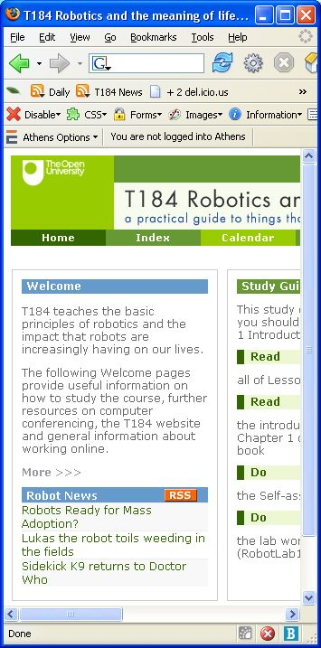

August 14, 2007
OpenMark Computer-Assisted Assessment Tool
For some time now, the OU has been running a "computer-assisted assessment system" on some of our courses using an in-house system known as OpenMark. The project is actually made available as an open source project, which you can find at https://openmark.dev.java.net/.
OpenMark differs from traditional CAA systems in:
* The emphasis we place on feedback. All Open University students are distance learners and within the university we emphasise the importance of giving feedback on written assessments. The design of OpenMark assumes that feedback, perhaps at multiple levels, will be included.
* Allowing multiple attempts. OpenMark is an interactive system, and consequently we can ask students to act on feedback that we give 'there and then', while the problem is still in their mind. If their first answer is incorrect, they can have an immediate second, or third, attempt.
* The breadth of interactions supported. We aim to use the full capabilities of modern multimedia computers to create engaging assessments.
* The design for anywhere, anytime use. OpenMark assessments are designed to enable students to complete them in their own time in a manner that fits with normal life. They can be interrupted at any point and resumed later from the same location or from elsewhere on the internet.
You can see an example of OpenMark in action at http://www.open.ac.uk/openmarkexamples/.
OpenMark is capable of serving a variety of question formats, including:
- generative, numeric response type questions that use random numbers to provide unique questions of a given form and can accept answers as integers, floating point numbers or numbers in scientific format (with or without units):

- text response type questions, either closed (that is, "designed to elicit a single, closely defined, response") or "that appear to be 'open', encouraging the student to enter a phrase or sentence", with assessment based on keyword/phrase matching;
- variations on multiple choice questions, including single or multiple response questions, drag and drop words onto images or words within words question types:


- "2D response" questions, where the student can interact with a 2D graphical component as part of the question, whether by placing markers, drawing simple lines or even manipulating molecular models:

OpenMark is built using Java and "is based around two servlets: the question engine and the test navigator. The test navigator deals with all direct communication with students, handles authentication, and handles details of tests - which question comes when, any explanatory information, and so on. Question engines deal only with the actual processing behind questions and do not communicate directly with the user or with the database that records user actions. All the question code runs on question engines.
"A [third] question author servlet, installed on the author's machine, allows them to compile and test questions [without the need for an IDE]."
Questions are defined using XML according to a bespoke XML schema, with Java code determining the required feedback and score calculation.
July 25, 2007
Thinking About Course Gameplay
OUseful blog post 501: Martin's been wondering Is education intrinsically a bit dull?, Marc's been deliver[ing] a stinging condemnation of elearning at his keynote address to the IEEE International Conference on Advanced Learning Technologies on Friday in Niigata, Japan and I have been asking myself the question: "if courses are games, have we got the gameplay wrong?"
This question arises partly from my background reading for a new 10 point short course on computer game design and interactive media, which has the deliberately provocative internal working title of "Playing God: Designing Games, Creating Digital Worlds: A hands-on guide to computer game design and interactive media."
Yesterday, I was looking at Half--Real: Video Games Between Real Rules and Fictional Worlds by Jesper Juul, which has an interesting take on the way rules limit, or afford, particular behaviours within a game.
One interesting distinction that was made in the book (and in this short paper) is between games of progression and games of emergence:
[G]ames of progression ... directly set up each consecutive challenge in a game, and games of emergence ... set up challenges indirect because the rules of the game interact. (p67)
The earliest adventure games are fine examples of games of progression - the aim is for the player to solve a series of puzzles in a particular order; Pong is used as an example of a game of emergence - every game is different depending on how the game is played (even though the rules are very simple).
This distinction - simple as it is - got me thinking about courses that have a strong linear narrative (which is how our online courses tend to be constructed): in a sense, they resemble games of progression. In games of porgression, the game designer specifies quite tightly how the game will proceed and what the player must do in order to proceed.
Compare this with resource based and informal models, which arguably have more in common with games of emergence. Games of emergence set up situations that allow the game designer to be surprised by the actions of the player as they proceed through the game - the goal state may be defined, but how the player reaches that goal is not.
Another feature of games of progression is that you probably don't want to keep playing them over and over again, once you've cracked them. Whereas games of emergence can be played again and again, with the player changing their behaviour as their skills develop, in turn changing the possible outcome of the game (and maybe even the way they play it).
Considering courses as games has a lot to offer, I think, particularly in terms of "gameplay" and player reward schedules...
...but first, I have some script marking to do... :-(
June 13, 2007
So Just What is a Podcast (or a Blog)...?
JISC are running an online conference at the moment - Innovating e-Learning 2007: Institutional Transformation and Supporting Lifelong Learning (where there are some interesting discussions going on - check it out if you can...)
Today's keynote is delivered via "a podcast", with a transcript also available:

Hmmm.... podcast...?
Looking at the above screenshot, the implied definition of "podcast" can only be something along the lines of "audio embedded in a web page playable via an embedded audio player".
(And not even a very good audio player at that. You have no idea where you are in the audio file, how long it lasts, no freedom to select a point 3 minutes and 27 seconds in etc.)
Whenever I hear the word podcast (just like whenever I hear the word blog) I assume a couple of things:
- that content is regularly published from that site;
- that I can subscribe to that content via an RSS/Atom feed.
In the case of podcasts, this feed can be used to syndicate content to my feed reader, or as a way of providing subscription based downloads to a client I synch with my MP3 player.
For a one off event like a conference, I'd probably even relax the "regularly published" constraint, and just go with the "made available via RSS" requirement.
The JISC online conference keynote "podcast" doesn't offer a feed - indeed, it doesn't offer the typical user any way of downloading an MP3 file of the audio. Not that you'd necessarily want to, in this context.
(Andy Powell also muttered about the discussion threading...)
I (and others) noticed something similar (in respect of language (mis)use) at the OU CTSS conference a couple of months ago, though that time with respect to the word blog. In particular, it seemed as if the word was being used to mean "web page that I published without support", though some speakers did go so far as to mean "a web page where someone in authority will make very occasional posts, asking you, dear reader, a question, and then you can comment on the post."
But that was about it... Subscription didn't figure... Maybe that's because the Wikipedia entry for blog doesn't mention subscription, or syndication, or RSS, although it does highlight the "ability for readers to leave comments in an interactive format [as] an important part of many blogs."
(Wikipedia does seem to expect feed based subscription for podcasts, though, although not a requirement for in-page embedded audio players...: "A podcast is a digital media file, or a series of such files, that is distributed over the Internet using syndication feeds for playback on portable media players and personal computers." [Wikipedia: podcast])
For me, subscription is a defining characteristic of the sorts of publishing I think of as blogs'n'podcasts (though maybe I need to rethink in light of received wisdom as exemplified by Wikipedia? Or maybe I should go in and propose a change to the Wikipedia definition...?). What subscription means to me is that even though I can keep getting content updates from the blog or podcast, I never have to visit the site again...
In the sense of syndication, it also means I can choose where I consume the content: a Bloglines or Google Reader river of news client, a PageFlakes or Netvibes dashboard (like my demo Institutional Dashboard Using Pageflakes), via my customised Moodle sidebar (or here), etc.
Blogs as reflective journals seems to be the way the term is used (in the OU at least) for student based activity. Blogs as places where a position can be stated and readers can comment on it (e.g. as a consultation tool, maybe?) seems to be the way blogs are interpreted here for internal administrative use. Blogs as publishing vehicles that support feed based subscription and syndication doesn't seem to be widely recognised, as yet...
June 06, 2007
T151 Day One...
A few weeks ago, I took on what should be a new production course if it gets through the opportunity review - T151 for those of you who speak OU course code, working title along the lines of Digital Worlds: Interactive Media and Computer Game Design (but don't quote me on that).
Production-wise, one of the approaches I'd like to explore, at least over the next three months, (which leaves plenty of time to rescue the course if things aren't working!) is a model that builds the course in part around third party content in several different ways.
In particular, I'd like to try and work out ways of using content that has different "durability" over possibly several years of course presentation. In this respect, I have in mind three classes of content: 'static', 'live' and 'transient'.
Here's how I see that working:
- static content is fixed for the life of the course (or at least, more than one presentation of the course): essays, papers, book references, major software resources and such like;
- live content on the other hand is content that is pulled in to the course on a live basis; this might be a live blog feed from a trusted source, for example, or links from a 'live' social bookmarking feed;
- somewhere in between is transient content. I see this as being content that is easily refreshed between presentations. This might even include content generated by students in a previous presentation, and then polished, or worked up, by the Course Team if necessary. Examples here include games created by students on previous courses, for example. Transient content will be fixed for the duration of presentation, but designed/identified as requiring maintenance/support between presentations.
We're having a CT meeting about the course later this week. As and when appropriate, I'll try and blog at the various stages we go through during course production.
(James Aczel is also blogging the progress of a course in development: H809 Blog.)
May 12, 2007
Powerpoint Presentations That Support Glanceability
"Glanceable Powerpoint" - what's that all about then?
Lorcan Dempsey posted a couple of days ago about glanceability after seeing the phrase mentioned in Learnin' from Virgin, my review of James Cridland's talk here a week or two ago.
Lorcan did a bit of digging and came up with an academic reference that included this definition:
Glanceability refers to how quickly and easily the visual design conveys information after the user is paying attention to the display.
He then applied the concept to search results: "it seems to me that effective ranking, for example, supports glanceability, as folks will focus in on top results and may forego individually inspecting each member of a result set."
Yes :-)
It also struck me in half sleep this morning how the presentations I respond best to when I'm in presentation blogging mode are slides that support glanceability - ideally slides with a mere handful of keywords that I can note down and use to scaffold my thoughts about, paraphrases of and quotes from, whatever the speaker is talking about.
The way Powerpoint is typically used - by academics at least - as a medium for pushing large amounts of text to the audience, whilst reading it out loud as well, was slated in a widely posted story last month reporting that people find it hard to process words that are being spoken at the same time they are being read.
The Presentation Zen blog posted a thoughtful response to this story - Is it finally time to ditch PowerPoint? - which is probably worth reading if you've got an upcoming presentation to prepare...
John Sweller, the psychologist behind the news story (and author of this topic related report), was quoted in the original news report as follows:
It is effective to speak to a diagram, because it presents information in a different form. But it is not effective to speak the same words that are written, because it is putting too much load on the mind and decreases your ability to understand what is being presented.
The Presentation Zen take on this is evident via their "house style", which combines a small amount of text with a relevant image:

My own, evolving approach, is to try to build presentations around keywords or screenshots - examples on SlideShare - which is similar to the Presentation Zen model in this respect: the text (and imagery) supports glanceability and reinforces the point being made verbally by the speaker at that time.
How to use Powerpoint most effectively appears to be one of the memes of the moment in the blogosphere; here's a way in to that conversation: Tony Karrer: "PowerPoint - More Questions".
Take home message for me - for easier blogging, make your Powerpoint presentations glanceable ;-)
May 26, 2006
O'Reilly SafariU
On Wednesday, we had a presentation from CJ Rayhill, CIO at O'Reilly's SafariU 'self-service, text book on demand' website. Here are some lightly edited notes from the session...
How could O'Reilly help out in academic publishing?
Been around for 25 yrs, now a media company, not just a book publisher.
As well as printed content, are O'Reilly are into conferences and developer communities (like ONLamp.com and XML.com).
SafariU is a free service to academia, providing free access to O'Reilly materials, mix and match contact, also in assocation with academic's own material, delivery in print or online. SafariU also includes a learning object exchange, plus shareable playlists.
SafariU driven by the idea that there must be a better way to deliver reference materials to students than high cost textbooks.
Consultation with users (academics?) suggests they desire:
- One stop shop
- Mix and match
- Upload own materials
- Combine materials
- Online or print
- Share compilations
O'Reilly-
Online library (safari books online 50% owned each O'Reilly and Pearson) - separate to O'Reilly
Bureau van Dijk, Belgium, host O'Reilly Safari bookshelf.
SafariU - went into beta 01/2005, redesigned from ground up following beta
MarkLogic XML server is the core component at heart of SafariU.
SafariU came out of beta 3/06 - www.safariu.com
Business model: free to academics, but student body must consume a certain amount of material ($700 per year) over the course of a year. O'Reilly sell print-on-demand (POD) versions of textbooks to resellers (e.g. campus bookshop) $0.16 per page (print); or online service (pay-per-time)).
If course uses e.g. material from several books and articles, with snippets of material provided by instructor, the student sees links to the full source books (presumabaly so they can then read/buy into those).
So the student pays to access the content...[hmm - in OU, we tend to provide the majority of third party content, e.g. course readers etc. as part of course, though there is a mixed model across OU wrt text books being bundled with course materials or student self-purchased.]
But there are also corporate payment/access mechanisms (?)
SafariX (Pearson) - multi-subject, textbook only service; student access to online equivalent of textbook for 50% of print cost. Thomson NETg appears to be another player in the area...
XML.com (and other O'Reilly web properties) etc. can be searched over from SafariU.
Within SafariU, academics bundle content in projects. 5 steps in building project:
- gather material
- organise material (drag and drop interface, estimated page count, estimated cost to student)
- print options (cover customisation, use own logos, binding options)
- review (e.g. generate inspection PDF copy) - can at this point go back to step 2,2;
- reorder/reorganise material, index and contents will then be regenerated interactively
order (generates ISBN)
Projects may be public or private (private for own use/own student use), public can be shared.
Looking to experiment with offline viewing options - e.g. socially motivated context (shareable annotations, comments)
Can't modify content (rights), but can write your own bridges. Can also import third party material if you clear rights and make it private.
In print version, each extracted section is branded at start of section wiith original source.
SafariU native (non-uploaded) content internally stored as XML [so we could get XML output...?]
Autodesk interested in the SafariU platform (not the content) so SafariU will be providing platform services for Autodesk...
[is there going to be an API?]
No e-commerce layer at the moment. But e.g. a trainer might have a private project, print copies of the book, and then resell them privately. [Hmmm, how does the copyright work there?]
Compilation is property of SafariU, but original content is retained by author. [So we wouldn't own the rights to any compilation we produced? Hmmm...]
User uploads of PDF only (to prevent users e.g. uploading powerpoint with animations etc.)
But - there will be links out to multimedia materials.
No repagination of uploaded material BUT repagination of the native (XML) SafariU content. (Some guidance to style provided.)
Generate dynamic table of contents and index; no bibliography generation(?).
Won't index uploaded PDFs (yet) or some of the old, originally uploaded Pearson content (which omitted index terms).
docbook format, XML mind editor used internally, future potential for contributor upload of XML as well as current PDF upload.
No limit on amount that can be taken from one book.
Minimum print book order number 10
min page count 100
max page count 820
After one print run, and delivery of course, instructor can go back in and revise content, reprint etc [same book but different edition? would the book get a new ISBN that's viewable via xISBN for example?]
At tmoment, if original source material included in compilation were uploaded, the compiler does not get an alert, but this may be something for the future.
?What about errata? No notification/feed thru of errata to sites/collections where content is used - yet...
Online: within a syllabus, content from up to 10 book titles.
Able to see which students have logged in to the syllabus.
SafariU - just a content delivery mechanism - not a full LMS.
Students want an offline option - what that might be is being explored - e.g. options that support highlighting, annotation etc. Value added, not just PDF.
Untethered options (??), offline use is current priority.
SafariU environment can be customised (cf. Autodesk relationship), so O'Reilly could host an OU look and feel SafariU environment for the OU.
Exploring federated search options (but then there are likely to be copyright hassles with reusing third party material not contained in SafariU).
SafariU/books online cleared for international use.
??bookshare.org - they can get SafariU content. [?Bookshare? - hmm - "Bookshare.org dramatically increases the accessibility of books for people with visual or other print disabilities." Maybe something the OU should look at?]
O'Reilly likes bookshare.
Search underlying SafariU will be reused to search O'Reilly in general.
Possible to purchase rights to republish x copies of someone else's book, upload those into a private project and integrate them with SafariU materials.
SafariU is a self-service, interactive offering.
NH: OU way is not me as academic putting together a course; it's me as academic in a CT doing some things, but other stuff gets done by/control passes to other people.
Costs are scarey for OU (scaleable) use.
Potential for shared authentication between OU students authenticated into Moodle and across to SafariU (perhaps branded in OU way and provided as content page withing Moodle).
NH: How does OU business model change if we go down SafariU route (e.g. no need to purchase, warehouse and ship several thousand copies of a book over several years).
[??expensive to recruit students - could federated search into our content help with recruitment and contribute to a reduction in this cost?]
[Could we guesstimate numbers of books required, get them printed and have them shipped to Amazon's MK warehouse???;-) Set-up some sort of just-in-time/just-after-order print model with despatch to Amazon for fulfillment when enough orders are in? What's the POD turnaround time?]
?OU going to move towards sourcing more and more comtent from outside.
O'Reilly moving away from pure publishing more into a service for educators.
Small amount of OU Business School is produced as print-on-demand already.
[
The term "print on demand" within the publishing industry has become almost entirely linked to publisher’s needs for rapid production of single copies to fulfil single orders. This is probably not a huge need for the University though Materials Procurement has been supplying the Business School with supplementary materials produced as print on demand.]
JC - 3 yr update cycle not sustaible.
NH - you think it'll change in next 5 yrs...?
JC: shorter update cycle will happen
NH: should - should happen...but it won't...not quickly...
O'Reilly talking to iTunesU about potential collaboration. [Hmmm - something else to add to the corporate academic computer services mix!]
OU library - 15 concurrent users to Safari books online via Proquest [see: ISBN Safari lookup Greasmonkey script], which doesn't suit the OU in terms of cost/concurrent users etc. (important for a university with 180, 000 online students).
Interesting model would be for course to provide online material, and give student freedom to select and pay for the 'send me a printed copy' version.
OU has deal with Harvard Business School press to gain 1-click access to HBS materials. [Hmm - couldn't find a particular reference to that in the Library - maybe just 'yet another e-collection'?]
Learning Lab - online course product from O'Reilly??? Hands-on online environment for providing students access to virtual sys admin simulators etc. Covers programming languages, server admin, operating systems etc. [need to look at this...]
Current OU business model - e.g. course costings tool - just couldn't countenance using SafariU like methods.
See also O'Reilly SafariU case study
Safari Books online via Library still likely to be useful in addition to SafariU (though Safari online is v expensive and limited to 15(?) concurrent seats).
Two-dimensional view of publishing: free-premium content on one axis, atomised-packaged content on the other. Market would like free-atomised, textbooks traditionally premium-packaged.
However, textbook model does not necessarily reflect usage (e.g. read sections 2-3 of chapter one, and sections 4-7 of chapter 2 - most(!) people don't read textbooks like novels).
[A lot to think about here in terms of remodelling OU production and delivery processes...]
PS if you're the podcast listening type, check out this conversation between Jon Udell and CJ Rayhill about Safari U and technology in education.
May 17, 2006
Google/Yahoo/Amazon Certified Professionals...
A couple of days ago (or was it just yesterday?) I posted on the topic of Google Certified Professionals as consultants who could go into SMEs and deliver training on getting a Google (or Windows Live etc.) web appliction office suite up and running. But it struck me that there may also be a need certification in the use of the code toolkits produced by the major webco's.
For example, Yahoo recently just announced an update to their User Interface Code and Design Pattern Library, which gives you industrial strength based widgets and CSS tricks. Now I know there are lots of toolkits out there, but the old saying goes that no-one ever got fired for buying IBM...
I wonder if there is potential in the future for saying that no-one ever got fired for using the example.com libraries?
And then last night Google announced the Google Web Toolkit (GWT) a Java coding environment with AJAX/JS code generation and whole lot more (early review here).
If I was Microsoft, I'd be getting twitchy. Surely Google can't be making a play to steal business from Microsoft's programming tools product line (speaking of which, there are Community Technology Previews of Microsoft's Expression web development product line currently available).
Amazon Certified Professional
Finally, I guess I should float the idea of an Amazon Certified Professional or eBay Certified Professional scheme which would certify the user as being competent at programming the APIs of the company in question.
(The Google Certified Professional would thus require three flavours of Certification: web application advice and training; expertise in using Google code libraries; and expertise in Google API programming.)
PS this is related too: "The Dojo Toolkit will be the first in a series of third-party AJAX components for GUI, communication, and data access that will be made available to users of TIBCO General Interface later this year." Ref: TIBCO Press Release
PPS: here's what a sample syllabus may look like, from eBay University
PPPS So here we go.... Google Certified Teachers:

The first 3 week's worth of study of Beyond Google cover Google power searching in depth, but not - admittedly - any of the other apps. I think it'd be fun to see how much of an ICT skills development course we could write if we just stayed Within Google?;-)
May 16, 2006
Google Certified Professional
WIth the increasing numbers of (free) web based office productivity tools, as well as Microsoft and Google's moves towards hosting academic email accounts, I wonder when we'll start seeing Google Certified Professionals (in addition to their Google Advertising Pofessionals) lending sage advice to SMEs about how to get the most from GMail, the Google Calendar, Writely and so on? (Update: err, oops, that's in addition to promoting best search practice of course (which we'll be doing in TU120 Beyond Google!))
This needn't be limited to Google of course - the Microsoft Live product suite continues to roll out, and the other member of the GYM - Yahoo - also provide comprehensive email and calendaring facilities. Which suggests the need, perhaps, for an 'independent web office applications advisor' who can take you through the vagaries of selecting an appropriate mix of online tools, as well as providing the training necessary to use them effectively.
(For a 'free' independent advisor model, I guess there'd have to be a level playing field in terms of referral payments?)
I suspect this is not the sort of thing covered in our new Information and Communication Technologies at Work (T121) course, but I wonder - is there a place for it someone in our level 1 offering?
The changing landscape also reminds me of the OU course T171 You, Your Computer and the Net: Learning and Living in the Computer Age which met a real need at the turn of the millenium helping people get online and providing basic web literacy skills.
(This course has largely been superceded by T175 Networked Living: Exploring Information and Communication Technologies and several courses on the Relevant Knowledge Technology Short Course Programme.)
With the promise of social software, feed based subscription, pushed content, synchronisation of data between web applications and mobile devices, and effective collaborative online working, I wonder whether there is an opportunity for T171.1 - Making the Net Work for You?
And another couple of years down the line, when the penetration of broadband has increased a bit more and institutions like the BBC (but not, I suspect, the OU;-) will be making ever increasing amounts of multimedia content available for download, I suspect there'll be another opportunity, educating people how to make the most of their digital pipes.
PS have digital plumbing services started appearing in the Yellow Pages yet, I wonder?
PPS Seems like Google are getting into the SEO training with the "Web Manager University".
May 15, 2006
An Aside on SOAP vs. REST
An aside, becusue this post is little more than a quote from Justin Leavesley: but it captures very well my own take on webservices and the SOAP vs. REST debate:
Clayton [in The Innovator's Dilemma] also describes what he terms as "Disruptive Innovation" of which one type is the low-end disruption. This is where a technically inferior innovation radically reduces the barrier(be that skill, cost or location) to entry thereby allowing an audience that was previously excluded to participate. This competes on new dimensions with a new audience.http://blogs.talis.com/nodalities/2006/05/web_services_and_the_innovator.phpThis massive new audience is currently excluded from the traditional solution so the disruptive innovation only competes against being better than nothing for this audience.
So disruptive innovation allows a new, less skilled community to participate and do new kinds of things. Almost by definition this community is larger than the community of experts i.e. it is the long tail.
If we consider REST we see that it is not technically as advanced as SOAP based Web Services. But it is significantly easier with lower skill and cost barriers for both producer and consumer. And sure enough Amazon and others are finding that the vast majority of the users of their platform are using the REST APIs.
One question for me is how we reflect this in HE, for example in our teaching about webservices? In business related web services, SOAP, WSDL, and business standard schemas like BPEL and BPMLare presumably the things we should be teaching our students to prepare them for a life in industry (for a good review on web services, see here).
But should this be at the expense of teaching playground hacks with RESTful APIs?
Where does the happy balance lie?
May 07, 2006
Blogging Academic Lectures
It's late, I'm tired, but I've just read John Dale on Laptops in Lectures and it reminded that I meant to post about my experience of blogging the OU Learning and Teaching Conference a couple of weeks ago.
So, for what it's worth, here's an off the top of my head list that I'll try and tidy up if I get a chance:
1) slides with lots of text on are a killer - you try and read the text, you try and listen to the speaker, you're trying to type notes. Confusion results and the blogging is painful.
2) slides with just a couple of words or a short phrase are a joy - they give you a sub-heading and are easily copied; this leads into:
3) it's easier to type while listening than copying stuff from presentation slides; it's also difficult to type everything the speaker says, so donlt even try; listen for key points, summarise and add short asides/private notes to yourself as well as things to pick up on/develop/challenge.
4) screenshots of websites, and websites demonstrated live, need the URL visible. That way, the audience can play along, take a bookmark and so on. A quick play might also give you inspiration/ammunition for a question;-)
5) In the link mentioned above, John Dale wondered:
t's possible in principle, I suppose, that a wifi–equipped laptop could be useful in allowing the student to look up additional content relating to the lecture via Google or whatever. But I bet nobody actually does this effectively; it would be too difficult to multi–task the searching, the listening and the note–taking.
Not necessarily true, though I guess it depends on the nature of the presentation being blogged. John was referring to a lecture, whereas I was in a conference situation. In one of the sessions I was in, a question was raised from the floor (Chris Pegler) picking up on a point of fact made from the stage after checking it over the net. (I've also been to some conferences where people are IMing real time in a chat room about what's being said from the front. Rude,possibly, but value adding too. Turns the presentation into something more like Speaker's Corner!)
One of the things that comes out from the above is that lectures and conference presentations are perhaps different beasts. But I wonder if the idea of a lecture delivering a litany of facts to receptacle students is another model of communication that will be disrupted by technology and the ease with which students can access linked information (I seem to remember it was always a chore going off to the library for a short library loan... but where's the problem if the paper I need is online?)
In seminars, too, I wonder if having occasional sessions where everyone brings a laptop could be a useful exercise, particularly if the discussion involves ambiguous claims that can be checked (via the web), but often aren't...
(Are political press conferences changing, I wonder, with the press being increasingly able to look up facts and challenge podium claims - or is wi-fi banned from them?;-)
Anyway - my take home for presenting to bloggers was: go for few and simple words on each slide (these provide cheap and easy subheadings); make URLs known (especially if you don't mind the audience wandering off their. On a couple of occasions, I found it quite enjoyable browsing through a site while the presenter was talking about it, each complementing the other. (Hmmm - there's (here's?!;-) that partial attention thing raising it's head again (here in the sense I'm minded to go off an have a quick refresher on it, paying attention to revising my notion of partial attention, as well as to finishing this post. A partial attention aside, no less!) It'd be neat if I could have a collapsible element button in Performancing/my blog for this asides...)
Anyway - back to the main thread. Perhaps not surprisingly, there are some strong similarities in the list of things that I perceived made life easier for me as a blogger of a conference presentation to the things I've been bookmarking as exemplars of presentation+bestpractice. Certainly in my own presentations I've started trying to keep the word count down.
April 27, 2006
L & T Conf - Final Question Time
Chair: Linda Price
Panel: Lewis Elton, Steve Swithenby, Niall Sclater, Paul Clark, Josie Taylor, Pete Cannell
Are we on the move and in which direction?
JT - society on the move and going all over the place. To everyone over 25 the way in which under 25s are using technology is worrying.
SS - if T&L is on the move it's because we are reflecting societal change. In a cynical mind, one muight say that society seems to be moving towards a state where people are unwilling to commit necessary effort to learning. Society doesn't appear to value commitment to learning as much as it perhaps did in recent past?
LE - "the young are not what they used to be" - always was, is, and ever shall be. BUT there are now considerable commercial pressures driving chidlren's behaviour.
NS - new technologies can offer much, but why bother if CT don't take up the opportunities that the technology affords. May not be moving forward quickly enough; need to find time and space to experiment with new technologies.
Floor - world seems to be accelerating -do we need a 'slow learning' movement? Podcasts slow you down...(a Good Thing).
Floor - Non Scantlebury (Library) - are we moving too fast? Lots of content around, intitiatives to produce more content - but we need some structure in place to help manage content (scaffolding and architecture to allow us to manage that content).
PC - not moving fast enough in the way we reconceptualise relationships (e.g. in terms of course production and delivery). Students are using technology in new ways and we run the risk of excluding them by not keeping up.
SS - we are faced with new considerations, forces, needs - e.g. worldwide aspirations of OU.
To what extent will introducing the VLE have on our courses? WIll the VLE model support the current format of courses and if so how will that affect the development of new courses?
NS - no CT are being forced to use the VLE (?!?!?!?). First tranche of courses already going out on Moodle (37 by end of May [basically a revamp of Promises/OU Student desktop, which used to aggregate XML content, I believe...]) Wjhat will role of ALs be in course delivery via VLE. To what extent should ALs be supplementing production.
PC - VLE will provoke change but how radical that change will be depends on several things. How do we get students to talk together, work together, take responsibility for what they need to study, how will we help them achieve CPD and personal development. By asking those questions first, we should identify needs and then we can look to which technologies help meet those needs.
Floor - PM - One of the benefits of VLE is that it will allow us to track/monitor student behaviour and as such better identify what students are doing in VLE, how tnavigation can be better supported (backed up by ealier story - every pixel on eBay fornt page must pay for itself. High grossing/outperforming pixels get moved up the page.)
JT - course terms should know why they are using a particular medium/technology.
LE - there is too large a gap between OU and trad universities. Other universities don't learn from OU (or each other) where we do have a strong emphasis on learning design and pedagogy; OU course developers don't have close enough contact with students.
SS - OU being watched with interest in our adoption of the Moodle VLE. "The Moodle model of learning is not the dominant model of learning we use in the OU" So do we subvert Moodle, or do we shift the way we teach in the OU to the Moodle style? In the latter case, there are profound changes required of CT and ALs. If we change our model we have to go for it hard internally and outside.
Floor - change can't happen overnight.
NS - Sees excitement, cynicism, conservatism around the OU. If the OU were being started today, what model of learning and teaching, student behaviour etc., would we be trying to establish.
LE - move from teacher centred to student centred learning is a big issue for HE.
Floor - CP - differences between production and presentation CTs, and the way they are likely to view the move to Moodle. E.g. should more resource be provided to CTs so they can re-engineer courses in the move to Moodle.
PC - Faculty must decide where resources are allocated. There is a problem in course production, courses do take too long to produce. Should we go for enhancing courses, vs. creating new material.
Floor - (an AL) - concern that ALs are going to have to go and buy into broadband, buy equipment etc. so they can support a big elearning push. Are they going to get the resource and staff development they need?
?? - Plans are in place to provide ALs with staff development and training to give them the expertise they'll need.
Floor - (David Robinson) - technology enables us to blur the distinction between production and presentation. Courses can become responsive [rolling rewrites?]
Floor - (Doug Clow) - Moodle seems to promise live course updating. how will this be managed in terms of workload planning in Faculties?
SS - Depends on patterns of working within individual Faculties. an ongoing/direct conneection between students and CT would be good. Requires major changes to way in which production works.
Andy Lane - there are changes in production, e.g. OU Web Certificate courses are being produced in a just-in-time fashion, CT do provide conference moderation, there are no ALs. Question then is is how we manage a consistent student experience across courses.
Role of assessment in courses with online collaborative discussion activities.
LE - assessment should not distort the learning or the work that precedes it. The assessment should fit around the working, not drive it.
JT - no good models as yet for assessment of mobile learning.
PC - problem of collaborative group assessment is relevant across HE. Advantage of doing it online is that you have a dtaa trace of who did what, when. But it's not clear how to make use of this
NS - assessment should drive learning. Students look at assessment then do coursework to meet those ends. Work is pointless if it isn't assessed. If discussions are scheduled and not assessed then students won't particpate in them.
LE - student perception is that if it isn't assessed it's not worth doing/don't take it seriously.
What will be most siginificant development for OU in the next 5 years?
JT - open content, Moodle
NS - VLE (Enterprise content management system is mentioned by others)
SS - open content, huge increase in collaborative production of resource. Working in larger teams with members outside the OU.
Are there too many dinosaurs/outdated processes in OU?
PC - any institution with history like to OU has a legacy, and there are always issues re: managing change in that sort of environment. Process of change may in part be a zero sum gain . Do we have too many people committed to old model? Who knows...But there is a lot of commitment and belief in OU mission.
NS - lot of old bodies and young minds...
LE - hstill have a lot to offer.
SS - organisations can reinvent themselves by spawning new structures and we may have missed a trick by not spawning off small institutions with a blank slate.
JT - not dinosaurs, as mad as everyone else :-) Still a very democratic organisation.
L & T Conf - Anne Hewling - Personal Repositories
Personal Repositories Online Wiki Environment - PROWE
JISC project, with Leicester(?)
CPD for ALs using wikis and blogs (was known in he past as the 'bliki project').
What kinds of sharing do we need to support for ALs (and are they interested in sharing)?
How do ALs expect repository based models to work?
Originally told ALs about blogs and wikis, rather than asking what ALs knew about social software and ways of using it (i.e. initial approach was presecriptive about how to use blogs/lwikis, rather than drawing on people's prior experience (if any) and/or their expectations of social s/w.
OU has more than 7000 ALs, Leicester approx. 300.
Leicester moved to Balckboard in 2005, OU moving to Moodle currently.
User needs assessment; tools assessment.
elgg (OU) and Plone (Leicester) testing environments.
elgg has personal repository support (up to 5Mb personal file storage) as well as group support.
Is the environemnt appropraite for what users say they want to do (also, is what users say they want to do what they actually (want to) do?)
Matters arising:
- what is a typical tutor and what are their typical needs? (v different across OU and Leicester, within OU
- PRMS (?personal repository management systems - how people manage personal repositories at the mo)
- why should people move to knew forms of personal knowledge management if the proposed methods (blogs'n'wikis) are not proven
Tagging posts (?and repository uploads?) is encouraged. Tags are displayed using a tag cloud.
Personal repository items can have an acces list associated with them
Looking at linking out to e.g. Writely for collaborative document creation rather than a wiki.
??is there a social bookmarking component in elgg, though you can subscribe to/aggregate feeds within it (I can't check - I'm in the OU Library at the mo and whilst I can see the open/public Enterprise wireless network, my 'connectivity is limited' and I can't actually access anything...hmmm - every else on campus the Enterprise AP works fine...)
Current experience is that people aren't using these personal learnig repositories.
Chris Pegler (in repsonse to Karen Kear - 'tutor's do share resoucre in FC confs') - OU tutors do share resource, e.g.via tutor FC conferences, but if content ets locked in the tutor course conference for one course and you want to access that material in another course, you can't...
L & T Conf - Andy Lane - Open Content Initiative
Why Open Content?
Wide range of content forms (documents, audio, multimedia etc.)
OU/BBC relationship means we have a long history of broadcasting 'open content' (free to view/consume/access, open2.net, OU materials in libraries etc.)
Open Content licensing is broader than just free to read - users can rework content etc., redistribute it, reversion it, if they share it on and acknowledge where it came from.
There is a Widening Participation agenda.
OCI can be a testbed for elearning tools.
Research and evaluation of the project is a significant part of the project - how do we do it, how wo people engage with the materials.
OCI may be a way of drawing materials in from other organisations.
OCI structure - ready to go materials in one store (the 'showcase site'), active reworking and remixing of materials in another area ('Playspace site')
'Showcase site' - chunks of open educational resource (3-15 hrs study time of self-contained material, labelled at a given HE level, 80% study time, 20% learner thinking time). Will contain samples of OU material.
Chunks also grouped to form 'courses', all at same HE levle [?hmmmm - not sure about that - what about modules offering progression across/up levels?]
900 hrs at launch, 5200 hours by 2008
"Playspace site" - supported open sensemaking site for creators
Library of learning objects
Course creation and management tools
Archived course material, loosely chunked/less structured
Material form other developers
Implications for teaching:
creation of envts and opportunities from which and in which to learn
Resource based learning with interactivity
Tuition and support separate from content
Different versions of same content for different contexts.
Curriculum design in content rich environment (how to remix from 3rd party content).
?Are we moving more to service (assessment and support) and away from tuition/content delivery
Prediction (guaranteed!) that on day 1, in October, material will be pulled out of the playspace site and translated into other languages. (?so surely there should be localisation areas of playspace that are based around different languages? Wil the environment be localised into different languages?)
Implications for Learning:
Need to judge an appropriate mix between , pedagogic support that is built into materials (e.g. SAQs), personal support (reflection, learning style), peer support/social networking, professional support
Importance of social computing in facilitating support/interaction
Co-creation of learning experience (?and self-creation of 'courses' - ?people who used this also used that? ?how can we track/reflect links/pathways between small chunks that users create themselves?)
Educator as 'learning broker' cf. travel agent (I can assemble my own package holiday, or I can go to a travel agent and get them to help me.)
Floor (Josie Taylor) - content has always been available, but 1) structured learning hasn't followed. What's going to be different in the OCI/OU site? and 2) Some students are likely to flourish and be driven by assembling their own teaching and learning strategy by assembling groups of chunks.
Floor (Niall Sclater) - of content is ubiquitous/widely available, how can we continue to justify the expense involved in producing out high quality OU content?
In the marketplace, there are people who aggregate effectively and become well regarded/trusted as a result (e.g. influential blogs). One OU advantage is that we know how to assemble content into courses.
L & T Conf - Niall Sclater - Blogging & Podcasting in the OU VLE
First 20 mins of talk given as a podcast...
I'm not going to blog this becuase you can listen to it here...
(Interesting - I see Niall has: 1) switched comments and trackboacks on his blog off; and 2) taken down comments that had been made - including at least one of mine, which I don't have a copy of. This makes me think - who owns the comments on a blog? (spam comments don't count!).
But I will observe how as the podcast provided the audio presentation, Niall was on stage, at the podium, clicking through Powerpoint slides (images, not text) at the appropriate point to illustrate the talk. ?so why not use SMIL or something similar? He had the audio track, had the timing info etc... Hmm, are there SMILy powerpoint solutions? could S5 be used with SMIL? Here's one take on it (this RSS2S5 approach also looks interesting...)
The talk has moved on from a discussion about podcasting, and how it may be used in education - to blogging. Is thetre going to be a mention of the role of comments I wonder?;-) Yes indeed - it seems there was a lot of spam, but also questions to the blog about matters best not argued in public. (As a result, it seems that Moodle blogs are for students to maintain personal logs, forums for discussion (so commenting will presumably not be part of the Moodle blogging system?))
I asked at least one of those questions to Niall's blog (commenting at the time, I seem to remember, that it was probably overstepping the limits and that the OU VLE Programme blog would perhaps be better sited within the intranet), and received no email reply or other acknowledgemt, nor a message to say that comments were all being taken down, or that perhaps my questions were not apropriate... hmm...I have an internal blog - behind the firewall - where I can post stuff that is relevant internally but perhaps too sensitive to be blogged publically?
I have been umming and aahing about whether I should be posting these notes internally (the live broadcast is open for intranet users only) but i have - on balance, taken the stance that a lot of the issues being discussed are generally relevant. There have been one or two things that are internally sensitive that I have witheld, and one or two things that I was a bit twitchy about posting, so if anyone thinks I have overstepped the mark please let me know.
L & T Conf - Paul Clark
[I missed the first 5-10 mins]
(Half recalled from while the laptop booted...
Elearning will allow us to move to a more activity based learning.
Competittion
Univ of Leicester
University of Liverpool
A.N.Other
New, new technologies
e.g. Skype)
Changing Customer-Information Relationship
Move towards providers using a range of channels
Increasing personalisation and user customisation/choice of what they receive from where by what channel
How will this impact onstudent expectations of online learning?
Speed of change [but witness Tom Coates blogging earlier today (Is the pace of change really such a shock?) about how media technology change has been happening for years - and is the norm - in media sector]
- disappearance of video
- reducing DVD cost
- podcasting arrived last year, Skype this
"How do we marry our production times with the speed of technological change?"
Educause view ofelearning 2005-2010 (Educause)
Social computing, personal broadcasting one year away.
educational computing a couple of years away
Four/five year orizon - context awareness
Student view
www.netday.org/speakuo_for_students_2004.ht#visions
Small devices, universal ownership, collaborative learning, gamelike learning
OU is in extended period of change wrt L&T
Need to react to student, employer and govt expectations
Speed of technical change makes delpoyment and evaluation difficult
Impact is a combination of many factors
Print model worls but looks dated in comparison with competitors
Tension between pedagogy and deployment in new technological forms
Tension between OU as academic institution and a business
"Quality is the bedrock of our success".
L & T Conf - Josie Taylor - Supported Mobile Open Learning
Futurist views of computers from decades ago were wildly out (e.g. Watson - need for no more than 5 computers).
Academic worries - what are benefits, how do I keep up, etc.
What's the relationship between societal and technological change - are we technology led or do we drive technology?
What are future learning contexts likely to be like? What are implications for learners?
Change is inevitable, but in technology it's not always obvious is what is (likely to be) stable?
Surface presentation - affordance (what you can do with me - function is same, but how you intereact may be differnt) - e..g podcasting is not so different to audio tapes we have used for years
Accessibility/delivery mechanism
Functionality (technology led)
Functionality required by learners (learner led)
For learners, they is something they would like to do, and we need to tap into that potential.
Pre-1935 - good books hard to come by unless you were wealthy or had a library card, then Penguin introduced cheap paperbacks.
Readers became buyers, wider range of books, books appear in railway stations, chain stores etc.
Allan Lane (Penguin) believed there was a market for books...
Publication became mobile, access ubiquitous, uniform cost, but functionality remained same.
Changing availability of books is one innovation but not end of book innovation.
So what's changing today?
'People power', user generated content
Technology building on functionality and technology that already exist, making things we do already easier (e.g. iPod). Butr functionality is same as with making audio tapes for personal use etc.
Move towards ubiquitous connection to net, ambient connectibry, flow (?across context?), interconnectedness/interoperability
Towards: semantic web, the grid, ubiquity, personalisation
Learning context of the future:
Intelligent networks, semantic data
Self-configuring/repairing networks
Self-modifiyiong coe (?!)
Grid technology - access to data, mashups (so data grid, I guess?)
Compliant learner (viewer/listener) is no more
Conversational aspect/two way relationship important
Does the role of teacher need to change - e.g. 'co-intentional learning' - dialogue between learner and teacher (but doesn't scale well).
Increasing information becomes overwhelming, needs to be managed.
Need to be able to deliver over a range of channels/to various paltforms.
"Ringmaster" - orchestrating the mix.
How to cope as teachers with technological change:
- specify what you want
- collaborate
- don't focus on technology per se
Focus on functionality, find out what people want to (be able to) do
Specify required functionality, mock it up (rapid prototyping), test it, re-specify it, re-test etc. Find simple ways of sharing klnowledge though stories.
e.g. GReTL (Geo referenced teaching and learnig, Jonathan Silvertown (current OU project - public page)).
Technology makes GReTL easy (we've always done it, now we can do it big time. The functionality is not new, T&L outcome is the same, but the technology enables us to do it bigger, better, scaleably etc.
A Model of Mobile learning.
Does making learning mobile make it different to just learning?
Sharples, Taylor & Vavoula - a learning model for mobile learning (? paper).
Conversation and context are essential constructs.
Draws on Pask's Conversation Theory
COnversation drives process of learning
Focus of investigation is conversation students have with ???technology, knowledge sources, other people?
[There's just too many words, too mnay pictures, too many slides...]
How does a technology failure with a 'conversation' affect a learner.
(Triangle Theory????????)
OU Currently leads Grand Challenge 'Learning for Life' - paradign shift is required
As a university, we don't know what we know (poor at knowledge sharing), are often our own worst critics, have a good external reputation, shouldn't argue about whether we could/should use technologies - students want it...
Questions - how do we develop AL skills to use new technologies for learner benefit?
JT - current IET/Library/KMi project looking at AL CPD [was the 'Bliki project - I'm not sure what it's called now?]
April 26, 2006
Social Bookmarking Workshop Slides
As part of a two day (today and tomorrow) OU internal Learning and Teaching Conference(which I've been live blogging throughout the day - see previous few posts) I gave an hour long workshop today on social bookmarking.
The workshop was an interactive affair - the participants all ended up using a locally hosted version of the open source Scuttle social bookmarking system - so it will be useful to see how mnay people carry on using the system after today.
If anyone would like to see what was covered here are the slides. I will try and add more notes to the slides over the next few days.
I've also popped up a (silent, for the moment) screencast about how to installing bookmarklets on an IE toolbar.
If anyone in the OU (faculty reps, regions, whoever) - or even anyone outside the OU - would like me to run a version of this workshop, with or without an associated discussion about how we might use social bookmarking in an OU context - whether for course delivery or for internal knowledge sharing/management - please get in touch.
L & T Conference - Afternoon Question Time
Panel: Dennis O'Brien, Mike Sharples, Ormond Simpson, Kathleen Gilmartin, Linda Jones, Paul Clark. Chair: Linda Price
Are we on the move?
OS - lots of recent failed e-universities
MS - Nottingham having an outpost in China(?); people have more mobile/access to mobile technology, micro-content, micro-interactions with technology, often in particular context.
DO'B - things should be (designed to be) useful; let users play a role in design.
LJ - who/what's on the move? People, OU, etc.; migration towards (significant) online components but delivered in a blended fashion. In OU context, a) worry that combined demands of teaching, research, staff development are a constraint, particularly at a time of innovation e.g. with Moodle adoption; b) buzz about how technology is and can continue to build communities.
PC - what are the ways in which we can provide rich experiences and reach new audiences using networked technology? Move towards getting OU students to discover resources (i.e.a move to more independent learnig contra the perceived traditional view of the OU of providing everything in the course pack). How do we develop community involvement/particpation/working/collaboration/collaborative learning(?)?
KG - Must find ways of accommodating student choice (e.g. in ways of communicating with them - via SMS etc.); easy to find contact/support information (i.e. effective online support network).
Floor - will our learning models work in international market?
LJ - currently working with Arab OU, but adatptation only a superficial level (not changes to learning design). How can we reach out - case studies offered significabt promise here (?for regionalisation, I guess=?)
Floor -If we teach collaboration, how do we distinguish between collaboration and cheating in assessment?
MS - small group learning; group assessment. Tools to support informal group working.
The OU has developed an effective model for distance learning. In an online context, does the OU have the right balance between funding the provision of content and support?
PC - we produce a lot of print. Do we have the right balance between print and e.g. actvities or independent resource discovery, and do we support that mix in the right way? Need to limit the amount of material we produce for students (prevent content overload). Need to re-evaluate how we develop independent student learning.
DO'B - ALs not paid enough, see themselves as central part of support network. Working for OU is about enrichment, not riches. Learning not about content, about support and removing fear. Support network motivates student and is the driver of their learning. Human communication in open environment (e.g. tutorial) can be threatening for some users who are happy messaging/living through an online persona.
OS - Phoenix is one of success stories in elearning world, and part of their success may rely on the weekly tutor phone call to students... may get a profit from increased support because of inmproved retention that arises as a result.
LJ - Ou model is not one of 'content is King' - far richer and discursive than that (e.g. tutorial in print, self-assessment questions etc.) Our content is not just facts....
Floor - missing generation (older generation) does not have skills that let them exploit new technology. I.e. the technology learning curve is disenfranchinsing particular demographic groups.
Floor - do we practise what we teach in terms of using communication technologies?
PC - not necessarily engaging with new media - blogs and wikis etc. It would be instructive for us to use these technologies.
Floor - VLEs are moving towards monolithic environments. Students have a variety of learning styles and do not necessarily want to be tied int o a particular forced way of working. How do we reconcile these?
MS - monlothic VLE tool is just a phase we are going through. The move is towards toolsets of components that can be combined in many different ways. VLEs need to be broken into parts and recombined with components that exist outside - mashing VLE components with third party compnents.
Are we going for a toolset VLE?
PC - yes - we are going to have a VLE made up of component tools, which is why we didn;t go for Web CT. We are not going for a monolith. ... Moodle lets us mix components. Can the tools be adaptable to the individual? Can we deliver content for different platforms? (e.g. as BBC lets people consume via TV, web, mobile etc.)
OS - problem of access. Approx 55% of UK households have internet accress, concentrated in middle class. Potential pool of OU students will be reduced by nearly half by requiring online access. Are we being ethical by requiring student online access, given our access mission?
Floor - students find workarounds where our technology is not what students want - e.g. students using Skype. We can't stop students using technology.
MS - IT sys admin problems using Skype. [BUT OU STUDENTS USE THEIR OWN MACHINES, NOT UNIVERSITY NETWORKS!]
Floor (Doug Clow) - are we being ethical if we DON'T develop student online skills?
LJ - elearning policy has been developed to accommodate access issues.
Floor (Chris Pegler) - looked up stats using wireless access in room (BRILLIANT!!!): rapid significant growth in uptake of network access since those stats.
OS - yes, but only slowly. Curve is peaking...
Floor - can we provide shared access through partnerships with businesses, other institutions, mobile devices, etc.
Floor - Library 's have internet access.
OS - only one pilot project seeveral years ago wrt library intenet access, and it was a failure.
PC - OU library working hard to develop relationships with other academic libraries.
Floor - OU timescale for elearning stratey is not consonant with apparent timescale with which interent access is becoming available.
If the panel could move T & L strategy forward at a stroke, what would panel wish for?
LF - time; pressure in researchn student numbers; need time to absorb (implications of?) new technologies - an extra year.
DO'B - Doing H805(?)
MS - More time to talk to learners about learning technology design
KG - help learners cope with encroaching complexity in service provision. Ability to offer personalised learner support/personalised communciations model.
OS - start learning from research; renegotiate AL contract; stop spending on rebranding and have coherent programme for talking to students.
PC - more time to talk to one another.Knowledge is siloed in OU. Don;t seem to be able to have time or capacity to share internal knowledge. More time to share good things and the things we should avoid.
L & T Conf - Kelvin Street - Recent Library Apps for Business School Students
Business school has a multimedia tutorial [a screencast, essentially] on using online library apps (e.g. for B830).
Link from course page to multimedia resources on How to do a literature search (essentially slides with audio and with mixed in screencasts shwing how to use a particular catalogue (e.g. Business Source Premier)] Rather than providing a generic info skill training product (e.g. Safari) the idea of these training packages is to provide specific training on using specific databases appropriate for particular courses.
Student feedback - students would like interactive online tutorials. E.g. after a screencast demo, let students try out a real database search.
Enocompass and LinkFinder Plus working in tandem (Encompass providing federated search, and LinkFinderPlus then linking through to online version of paper, where available. However, for some databases, it seems that the LFP will take you to a page where you still have to do work (e.g. it will take user to a Journal page and they then have to find the article by hand - yuck!).
Click through from course page straight to an ebook. Students can look at each page, but limited as to what they can print off at any one time (e.g. print a page at a time). Many ebooks are searchable (often much quicker then using an index). Ebooks limited as to number of concurrent users (e.g. typically 2-5 users). The "loan period" can also be specified (e.g. on www.netlibrary.com log a book out to a student for a couple of hours.
ROUTES embedding via XML feed into course web pages (e.g. B853).
L & T Conf - Steve Armstrong - Enhancing the Brand Through Podcasts
Background
Move away from mass broadcast.
Origins of podcasting in blogging (audio blogging).
Syndication via feeds, subscription model etc. etc.
Enhancing the brand
Podcasts good for:
- language learning
- facilitate self-paced learning
- support students with disabilities
- record conversations from Skype (e.g. using Audacity)
- richer learning environment
Brand - not just the logo 
More about, products, services, organisation
OU well known for its BBC relationship [e.g. check out &Open2.etc]
Advertising plays a role in communicating the brand, but so does student experience (word of mouth marketing follws etc.)
Perceived values about brand.
Brainstorming for podcast content ideas:
- user survey on contentious issues (e.g. ID cards), invite users to compare their responses [?community podcast network?]
- tantalising facts
- tools/tricks of the trade
Follow up activities - quizzes, diagnostics, tasters etc.
Potential benefits -
- make OU more attractive to younger students
- filler content (improve retention) between registration and start dates
- enhance relationship with BBC
- exploit current debates
- add to learning variety
- potentially low cost (e.g. free persoanl audio tools etc.) [but what about production values?;-)]
Subscription also supports videoblogging/vlogging/videocasting.
Podcast to mobile devices.
L & T conf Keynote - Mike Sharples - Beyond Mobile Learning
[Live blog]
Beyond Mobile Learning - Mike Sharples
Informal online networking - e.g. social networking sites (MySpace, Bebo)
Many useful skills implicit in social networking - communicaiton skills, networking, teamworking, online research etc.
Conflict with formal education - disruptive devices (e.g. PSP in lecture room), disruptive sills - informal networking, knowledge sharing
Reaction lifecycle in schools/HE- ban the technology, welcome it, manage it
Tension between informal networked learning and formal institutional learning.
Djanogly City Academy at Nottingham - school built around mobile technology. Middle school; 11-14 All kids have tablets, wireless linked to data projectors. NO interactive whiteboards! Plasma screens to displat students' work. Spaces for small group/informal learning. Technology stays at school (no laptops go home...)
Learning with portable technology (PSP in classroom) or learning across contexts (learning across time, space, context etc.)
Mobile learning phase 1 -
ebooks, classroom response systems (voting etc.), datalogging - focus on handheld technology
Phase 2 - learning outside classroom (learning in multiple contexts), interaction between formal and informal learning
Mobile learning - what works
- classroom response systems
- laptops/tablets (increasing suppport for wireless in e.g. lecture rooms)
- SMS alerts (considerable scope for delpoyment in e.g. Kenya where widepsread availability of mobile phones, if not fixed telecoms network/widespread computer availability, unreliable surface mail). Good for co-ordination and management.
- SMS revision questions (BBC Bitesize)
[Several examples of simple group working using mobiles in classroom setting. A question that concerns me, as with classroom response system, is where do you get benefits by virtue of using the technology instead of 'traditional' techniques - hands up, verbal group discussion???]
Just handing out PDAs doesn't work. Communicaitons are important.
Third phase - beyond mobile learning - trying to look beyond the gadgets to
Contextual & ambient learning
Mobile learners, designed learning envts, informal learning
Mixed reality learning -
e.g. MyArtSpace (making school museum visits more interesting).
Problem with school visits is: often no pre- work, no post- work. Visit is standalone activity.
Combination of personal (mobile phone), physcial space (gallery/museum), virtual space 9online gallery.
e.g. pupils visit gallery/museum (e.g. D-Day museum, Portsmouth - problem oriented learning (e.g. were D-Day landings a success))) and collect info relating to a particular topic and log it with 3G phone. Presentation using collected info/exhibits when back in school.
Exhibits are tagged - exhibits can be adding to personal collection by using tag via mobile to add exhibit to personal online collection.
Pupils become curators, creating their own interpretations.
Contextual learning - learning across contexts
Delliver appropriate content e.g location ased guides
Activity in context - e.g. datalogging
Services in context (commercial driver for many of these - e.g. location aware services)
Customised content/interfaces
Context may be a dynamic and historical contstruct.
Make links/connections between physically removed artefacts in museum by walking between them. Mobile devices can prompt those translations in space/physical movements by the visitor.
Location aware devices can deliver appropriate content for particular locations (via GPS) sa well as promote the user to move between locations.
'Heads up' not 'heads down' interaction - 'walk up and listen' audio.
[Mobile device should enhance the experience and add value to an exhibit, not describe explicitly what the user can obviously see.] Tell the story behind the exbiti. Point out things you wouldnlt see unless they are pointed out to you.
Ambient learning
DIgital artefacts to augment envt and enable learning - large public screens, virtual graffiti
Design/develop 'technology enabled learning spaces' (e.g. do more than the blue plaque)
The Future:
- lifelong learning support: need to design a mobile lifelong learning envt, not a mobile office environment which is how e.g. a laptop is typically set up.
- environments that teach about themselves
- location based social networks
- Wide area educational gaming (e.g. in Japan, mobile phone cells contain treasure items, users have to visit cells to coolect treasure, and then they can share it. One side effect is that this is affecting e.g. commuter routes as well as encouraging people to visit locations off the normal tourist trail.)
April 23, 2006
Outsourcing Email in Higher Education
Some time ago I blogged in passing about how Google were starting to host email accounts for educational establishments and more recently about how they appear to be seeking to attract students to use Google tools in their everday College Life.
Well, it seems as if Microsoft are about to do something similar as part of their Windows Live @ edu initiative:
Connect your college or university campus with free hosted e-mail from MSN®. Provide all of your students and alumni with free e-mail accounts that potentially never expire, featuring a custom domain name selected by your institution. You and Microsoft® can bring your school the same e-mail, messaging, and collaborative services that a global network of millions of people already successfully utilize.
The service offers hosted email, Windows Live Messenger (which inlcudes video and voice communications), MSN Spaces, MSN Mobile and MSN alerts, as well as anti-virus and and junk email protection. The rationale for this service is discussed in part here.
There's no mention of Live's other recent scholastic release - Windows Live Academic Search - but I imagine this is all part of single targeted audience push? (Where was it I heard the prediction that it would be elearning that would drive internet growth?)
Just to see how the Google trial was going (aside from Google College Life, of course) I revisited the original blog post and found my way to a Gmail for your domain registration page, in beta at the moment.:
This special beta test lets you give Gmail, Google's webmail service, to every user at your domain. Gmail for your domain is hosted by Google, so there's no hardware or software for you to install or maintain.
As with the Microsoft offering, there's more than just hosted email on offer. In addition to Gmail, (with its 2Gb of storage, of course) the hosting package also includes Google Talk and (anytime, apparently) Google Calendar.
With both Google and Micrsoft allegedly to looking to offer unlimited freeonline storage in the next year or so (e.g. as reported here: Microsoft to serve up Google Gdrive storage rival ) it will be interesting to see whether they offer a hosted 'educational portfolio' product as part of their scholastic/educational hosting packages. Certainly Microsoft's recent acquiistion of Onfolio - and the speed with which Onfolio has been integrated within the Windows Live Toolbar - suggests this is not wholly out of the question.
And finally, I wonder if we're likely to see integration of these services within some of the larger VLEs at some point?
And if not, why not....? ;-)
PS for completeness, I guess I should add a link to iTunes U, Apple's free, hosted service for colleges and universities that provides easy access to your educational content, including lectures and interviews 24 hours a day, 7 days a week.
And there's more:
iTunes U sets educational content free by delivering the best solution for the distribution of content that can be accessed by an iPod. And iTunes U complements other higher education online learning systems, leveraging existing investments in technology infrastructures. Making it all work together is seamless, thanks to Apple’s unmatched hardware and software integration and innovative management tools.
April 21, 2006
Time for a Course on a Stick?
Although our Technology (Relevant Knowledge) short courses are delivered largely online, they still have a surface mailing associated with them. In the case of the course I work on (T184 Robotics and the Meaning of Life: a practical guide to things that think) the mailing includes the two set books and a couple of CD-RPMs - the ever present online apps CD and a course specific one which contains our robot programming environment, the larger PDF files and some of the video resources that are linked to from the online course materials.
One of the things that has been mooted on and off, most recently in the last couple of months with the preproduction of TU120 Beyond Google: working with information online, is the idea that we should deliver course resouirces via a USB memory stick.
The cost has to date been the major reason against this, but as the price of Flash memory comes down, perhaps we aren't so far off seeing the first OU Course on a Stick!
Anyway, related to this theme are what are possibly the first 'audio books on a stick', or at least, the first I've seen - Playaway self playing digitial audio books.
These come pre-loaded and ready to play (headphones and AAA battery are included). Digital copying of the content is not supported:
In order to protect the copyrighted works of authors and publishers as traditional books do, you are unable to make copies of Playaway. But you can share them with friends just like you would lend your new bestseller.
However, to offset the pain of the cost ($35-$45) it's recommended that you share the book by passing it on:
Good stories should be shared. Here's how you can share your Playaway: - Donate it to Project Learn (projectlearn.org). - Give it to your local children's hospital. - Plug it in your home stereo and listen with your whole family. - Drop it in your kid's backpack to listen to on the bus. - Give it to your kid brother or sister as a hand-me-down. - Make it your holiday gift exchange. - Donate it to your neighborhood nursing home. - Start-up a Playaway Book Club with it. - Send it with money, beef jerky and a special note in a college care package. - Hook it up to your car stereo for a road trip with friends. - Switch it with your kid's video game for 10 minutes of something new.
They also suggest leaving it on a parkbench, in the Bookcrossing style, I guess...
What I'm waiting for now is an audio+ebook vending machine, with a touch screen menu that lets me choose my book in audio format and/or as an ebook, pay for it, wait or second or too as the machine fetches the book and installs it on a memory stick with a colour/design of my choosing, and then vends it to me!
The combined book should, of course, have chapter bookmarks, as well as a bookmark that placed wherever I stop off reading/listening. For the dual purchase (audio and ebook) it would also be neat if cross-bookmarking were supported - so I could easily pick up reading at the point I stopped listening, and vice versa.
This would tie in well with the Caravan Project, which I stumbled across today:
The idea is this: publish the book in five formats (audio, chapter, hardcover, digital, and print-on-demand) and let customers decide which one(s) they want.
April 05, 2006
Plex Personal Learning Environment
I've just spent 20 mins or so over lunch having a look at the Plex personal learning environment desktop client (written in Java, versions available for Windows, Linux and Mac), and whilst I'm still not sure about half of what it does (there's no documentation I'm aware of yet), here are a few screenshots:

The client itself offers an arrangement of resizeable, tabbed panels and the ability to define a set of personal profiles, presumably to allow you to have different personas/profiles for different courses you may be signed up for?

At the moment, chat/IM options are limited to AIM, MSN, Yahoo and Jabber. (How about Google Talk, chaps? And what about Skype...?)
Other profile options include lists of your goals, friends, portfolio, etc., as well as a 'sharing' setting, presumably referring to an online storage (ftp?) area?

Activities, Resources and People appear to be the major category types.
- Activities: I'm not sure I understand these yet...
- Resources: these can be orgainsed in gorups and added in various flavours; I'm guessing that the Smart Resources will support filtering options:


- People: a contacts book, I guess, default on three contact types:

Contacts are entered using FOAF records:


The idea then is that you can email or chat with contacts (although I'm not sure if these features are implemented yet):

Resources are easy enough to add, and for feeds include a feedreader:

The Tools look interesting:

Conduits and Providers both allow you to enter enter details for web service APIs; here, for example, is the Conduit setup panel:

and the Provider set up panel:

This integration of APIs means (somehow) that you can wire up the client to a variety of APIs and presumably pull content from them, as well as send content to them. I'm not sure if the Providers are intended as sources and the Conduits as sinks?
Certainly if the Providers are going to be things like search targets, it would be useful if OpenSearch was supported.
The ability to share resources seems to be built into the system by means of sharing via Conduits although as with almost everything else in the environment, I have yet to try it out...:

Tasks can be defined either as single entities, or via a feed:

Does this mean that Tasks also generate feeds I wonder?
The Exploration type looks interesting:

but I'm not sure what it does yet...
Well that's the quick tour - I'm not sure what most of the facilities let you do yet, but I'll try and have a tinker of thenext week or two, in which case I'll blog any findings...
PS there's a presentation about Plex from one of its developers here.
April 04, 2006
My Podcast Radio
Cheapskate that I am, I tend to download podcasts onto my PC at work, not just to save bandwidth but also becasue the pipe is a lot faster at work. This suits me well, most of the time. I tend to downlaod about 5 hours of content a week, of which I skip through about an hour, depending on subject matter, leaving four hours listening to neatly fill my there and back commute to work each week (2 hours driving time each way).
What had been a pain previously - adding new feeds for 'trial listening' to my podcast receiver that I'd saved as podcast tosubscribe links on delicious - is now easily handled using podnova and its customised Juice desktop client.
Synching between my online podnova account:

is handled seamlessly using an OPML feed from podnova, so now I can add new feeds online and then let my integrated desktop client do the gruntwork of the downloading.
This is something I am going to have to explore more, I think - online app and desktop client integration.
March 24, 2006
An Alternative Take on Online Apps - Browser-based Desktop Apps
Just a quick follow up to the previous post on online application bundles - Ajaxlaunch have announced that over the coming weeks they are going to release a series of what are essentially browser based rich interface applications with the look and feel of current desktop apps, but provided as a lightweight browser based apps.
The opening shot is a cutdown Microsoft Word lookalike: ajaxWrite. What's different about it is that files are saved to and from the desktop, with the client residing in the browser.
At the moment it's limited to Firefox, but the intention appears to be to go for cross-platform/cross-browser apps.
There's also a stated intention to keep the base offering free.
So - as far as providing free office apps for our students goes, there appear to be 5 (and counting) models:
1) Provide a CD-ROM/DVD-ROM with an installer for a bundle of desktop apps;
2) Provide a CD-ROM/DVD-ROM/USB memory stick with an installer for a bundle of portable apps (or preinstalled in the case of the USB memory stick);
3) Provide a Google Pack like downloadable bundle;
4) Provide links to (and ideally web service integration with) online apps likely Writely.
5) Provide links to browser based apps that can write to and from the desktop, like ajaxWrite.
Update: surely this must complete the set? Your own office suite on a KDE (Linux) desktop, accessed remotely from CosmoPOD.
What's the betting we just stick to (1) the online apps CD?!
Making the Most of Online Apps
I've written before about the application bundle the OU gives out on CD to our students and how we might consider alternative approaches to this in the form of delivering portable apps on a USB memory stick, or downloadable bundles like the Google Pack.
There is a third way, of course, that is increasingly possible and that is to provide an online application wrapper that allows students to easily set up an online office environment for themselves.
For example, with Google's purchase of Writely presumably putting Writely on a secure footing, we could now point students to that as a possible application for them to use for writing documents.
I don't know if anyone is scouting the Numsum online spreadsheet, but that's another online application we could possibly be referring students to.
Ideally of course we'd be able to offer one click registration to these services (or the ones they select) for students who aren't already registered with them.
A section of the student's personal profile page on the OU system could also be used to allow them to enter their web apps login details so they could access these third party services from within the OU (or OCI learning environment.
Ideally we'd be able to offer common authenitication to allow students who have an current OU authentication ticket to access Writely, or Numsum etc. although I suspect the OU powers that be would be wary of exploring any such relationship with a web startup, or a web monster!
Web services would provide an alternative integration route, of course, even if it's only at the level of syndicating feeds (e.g. the Writely personal RSS feed can be accessed via a secure https route.)
That's still pretty neat, though. For example, I just added Writely to my Netvibes profile (read how here), and was immediatley able to click through from Netvibes to any of my public Writely documents (and then edit them with another single click). The feed keeps users updated as to changes that may have been made by other authors collaborating on a document, which could be very handy in an OU context, with several students working at a distance on a common document as a part of a group exercise, for example. One for MyOpenLibrary, perhaps?
Netvibes has several other neat feed consuming ideas - for example GMail, and iCal calendar feeds. (Hmmm - calandars... perhaps we could add an online calendar to the mix, like 30 Boxes perhaps? I know calendaring is one of the VLE mini-projects - I really hope they make whatever solution they go for syndication friendly (both in and out)!)
And finally - you may have noticed that this is (sort of) an apps corollary to the ad hoc community doodle I posted with last week. That's purely intentional...
March 19, 2006
Word 2003 Research Pane
I've just got Word 2003 installed on my desktop machine at work, which means that just as soon as I get a couple of hours spare I'll be having a go at timnkering with the research pane.
If you haven't come across the Research Pane before, My understanding of it is that it can be used to consume web services within the MS Office environment.
Now I don't know whether a convergence of search and authoring environments is going to be useful/useable, or whether it'll just get in the way and I'll carry on using a browser for search related activities when I'm authoring (certainly, it's handy having several tabs open to refer to with results from different pages when I'n writing, and having to switch between Word etc. and FF isn't that much of an overhead), but I feel I ought to give it a go.
So, when I get a chance, I'll have a dabble at writing an extension or two myself (perhaps for the OUseful books webservice for starters) as well as plugging in a few tools for services the OU library subscribes to, such as LexisNexis.
Btw - does anyone know of a similar feature in OpenOffice?
Integrating Ad Hoc and Formal Communities
By chance, I had a brief chat on Friday to Marc Eisenstadt and Simon Buckinghum Shum, both of KMi about the potential they see for using Web2.0 approaches in the infrastructure that is going to be built around the OU's
Open Content Initiative (if you're interested, here are the job ads - if you apply, please mention you found them via the OUseful Blog;-)
One of the things I've had in mind for a bit, but not articulated yet (though I have hinted about it previously in a note to self and which I fluffed describing a bit on Friday), is the idea of how we might build learning communities around the OCI content as well as recognising that they are already ad hoc communities that already exist that might also benefit from using OCI materials.
(Marc has commented in the past, for example, how OU students come together in ad hoc communities, e.g. on Yahoo Groups, in addition (I assume) to participating in the 'official' course conferences we run for the majority of our courses.)
One idea I've been mulling around that relates to student use of OCI material (rather than use by other academics or institutional developers (two significant communities that Simon brought to my attention)) is how we might set up user tool profiles that reflect the tools currently used by learner participants.
What do I mean by that?
Ad hoc Learning Environments
Well, as I understand OCI, an important part if it is that we'll be offering a learning environment to support OCI, not just making content available. We already support in a small way the forums on Open2.net, the site set up jointly with the BBC to provide web support to OU/BBC broadcasts, so I'm guessing that community forums will be an important part of the OCI learning environment offering, along with other social tools.Just what other tools are going to be included is anyone's guess, but rumour has it that the artificial Chinese Wall that was put up between the OU's Moodle based VLE project and the OCI Environment project is now going to be semi-permeable at least, so I guess we're going to see conversations across it regarding what sort of social/community/participation building tools are going to feature in each project.
The VLE project has student blogs and wikis in mind (and social bookmarking too, I hope!), as well as an eportfolio and so on, and I'd be very surprised if these weren't going to be exploited in community building around OCI (indeed, OCI may well drive VLE tool development), which raises an important quesiton for me that provides some amount of context for user tool profiles, in particular:
To what extent will user communities require participants to go to the OCI (or OU VLE) site to join in and to what extent will participants be able to join in from a home context?
The home context is not a phrase I'm happy with so here's what I mean by it: those personal tools or clients - web based or on the desktop - that I use day to day. For example, my preferred email client, feed reader, word processor and so on. So perhaps 'personal context' and 'personal tools' would be a better way of saying it.
The home context is thus distinct from, for example, a forum hosted on the OCI site, or a feedreader or blogging tool embedded in the OCI learning enviroment.
Note also that this is not a PLE - Personal Learning Environment - at least as I currently understand them. That is to say, my understanding of PLEs are that they are centralised learning environments independent of any instituion. (Instituionally hosted learning environments are usually referred to as VLEs - that is, the assumption is that a VLE is 'owned' by an instituion and populated by its students.)
Instead, I guess what I'm proposing is an ad hoc learning environment (AHLE), recalling some of the ideas of a Portable PLE and indeed more directly a Virtual PLE
Now I don't know - and don't really have a feel for - the extent to which community feeling is strengthened by going "somewhere" to participate in a community, but I'm taking the view that we expose people to particulalry tools in a learning environment because they support learning in the (semi)formal course environment and they can also support an individual's informal, lifelong learning in their day-to-day lives.
That is, if we teach students to blog in an OU course because we think it can help their learning, then in part we've failed to prove that point if they don't continue to use the tool after they've completed the course, either in other courses or their daily professional development. (Unless the argument is that the blog is useful scaffolding only at a particular stage of learning development, and is no longer useful after the course it is used in, for example).
So - the position I'm starting from (and seems to have taken a long time to get here!) is that some participants in the OCI venture will already be using social/communication tools in a home context and will want to particpate using those home context tools and some will want a place to go to (e.g. the OCI learning environment) to participate. Some will want to mix and match both approaches.
Furthermore, the environment should be able to cope with these different modes in such a way that other particpants don't necessarily how any other people are participating.
This is all a bit confusing, I suspect, so here's an example to try and make it a little more concrete: a blogging community.
A Case in Point: Blogging Communities
As I see it, there are three components required in a blogging system:
- a client in which to author the content;
- a system on which to host the content;
- a client with which to view or otherwise consume the content.
(The host provides a wealth of other services including an HTML view of the content, a feed, a persistent URL of a web page of each post, digests (e.g. over time or topic), comments etc.)
These components may be closely integrated, or they may not.
For example, Blogger.com will provide you with an authoring (content creation) and hosting (content hosting) environment, Bloglines primarily provides a feed reading (content consumption) environment (although it does also offer blog authoring/hosting), Performancing for Firefox (which I'm using now) just allows me to author a post, RSS Bandit is a desktop feedreading client and so on.
Now, a learning environment that encourages learners to blog will probably provide a unified environment for creating, (hosting), and consuming blogs posts. But it is quite possible for others to participate in this community from the home context.
In fact, there are eight (8) discrete configurations for mixing and matching the three blogging components (creation, hosting and consumption) across the 'place-to-go' environment and the home context, as well as a continuum of mixed strategies.
(By mixed strategy, I mean that students may receive, for example, RSS feeds through different clients depending on the sort of information the feed is providing. For example, I may choose to receive news blog announcements in my Google homepage, blog posts from particular blogs to my feedreader, and from other blogs via an RSS2email relay into my email box.)
So what are these configurations?
| Go-There Context | Home Context | |||||
|---|---|---|---|---|---|---|
| Configuration | Content Creation | Content Hosting | Content Consumption | Content Creation | Content Hosting | Content Consumption |
| 0 | Y | Y | Y | N | N | N |
| 1 | Y | Y | N | N | N | Y |
| 2 | Y | N | Y | N | Y | N |
| 3 | Y | N | N | N | Y | Y |
| 4 | N | Y | Y | Y | N | N |
| 5 | N | Y | N | Y | N | Y |
| 6 | N | N | Y | Y | Y | N |
| 7 | N | N | N | Y | Y | Y |
So for example, a configuration 0 style user would create, host and read other people's blog posts solely within the OCI learning environment, for example; a configuration 7 user would use there own client, host and feed reader (although their blog feed would perhaps be syndicated to the OCI environment; a configuration 4 user would user their own client to create content for hosting at OCI, and also use the OCI feed reader, and so on.
At this point it is perhaps recapping the model I am assuming - that there is an OCI content repository and associated with it an OCI learning environment. That learning communities will develop within the learning environment, and as ad hoc communities around the content. That hybrid communites composed of learners using OCI and home context/personal tools should be supported seamlessly (so that, for example, OCI based learners would not not that their some of their peers were using home context/personal tools. (That is, that communities based around OCI 'VLE' and AHLEs should be possible.)
What Services Do Institutionally Hosted Learning Environments Offer?
At this point, it is perhaps worth briefly stating what I think are some of the important features of a centralised learning environment:
- Coherent navigation across services/components
- Common styling across services
- Content hosting
- Social networking (groups, like minded people etc.)
- Common authentication across services
(B***r - Performancing crashed in Firefox and lost 500 words...I'll try and recreate, but the rest is now mostly note form...)
To what extent can these components be satisified in an ad hoc tools way?
Consider navigation and style:
- Navigation can come from Sitemaps or SiteInfo feeds, or generated from consumed content feeds;
- common style can come from providing templates (e..g Blogger, Typepad or Moveable Type templates) or republishing feeds (e.g. like Feedburner or SuprGlu.
The tools we can add to our environment go way beyond just blogging, of course - IM/chat, wikis, collaborative authoring tools, podcasts, social bookmarking etc. etc.
Now at last I'm at the point where I can perhaps start to think about a learning environment profile building tool. Consider for example, a user wants to join a community and participate in it using a personal IM client and feed reader, and a personal blog. The envrionment builder tool would allow them to wire these components together to work within the community (wiring tools might also be provided in a more technical way to developers wanting to work a the level of wiring web services together).
How might this work?
The the tool generates a list of addresses to add to the IM client address book, corresponding to learning community chat rooms or participants, and perhaps add them to the user's messaging service personal profile via an API, as well as adding the user's contact info to the list of participants in the community.
The service subscribes to the user's blog, offers to republish it in the environment skin in a Feedburner like way, and adds it to the OPML reading list for that community.
Finally, the profiler subscribes the user's feedreader to the OPML reading list for feeds relating to the particular learning community the user has just joined.
At the technical/develop level, preconfigured profiles could perhaps defined and made available for personal cloning in a Ning like way - though this then goes back to a centralised PLE model perhaps?
The above is all v rushed and sparse, but I think I have it clearer in my own mind now how to go about building a demo, over and above the gut feeling that a mashed learning environment model is viable.
More on it when I get a chance....
[Note also that I have absolutley nothing to do officially with either the VLE or the OCI project and the above relate just to personal thoughts and doodles.]
March 13, 2006
Chatting About Web Pages: Just Another Form of Annotation?
I've been wondering over he last few days the extent to which chat might be a useful mechanism for annotating web pages compared to more 'traditional techniques (such as these).
So when I read this post from Russell Beattie this morning, which mentions his various experiments with IM-enhanced blog pages over the years, I thought I should pop a few thoughts down on the matter, idling around how we could make use of chat in our online courses.
This is all very of timely of course - over the last few days I've had my invite to 3bubbles which "unites chat and blogs to create real-time conversations in the blogosphere" (though as yet I haven't added one of their chats to any of my pages), had a quick play with Gabbly (which you can use to chat about the OUseful blog if you like) and taken note of "[t]his Wordpress plugin [which] adds live chat functionality to your Wordpress blog".
I also read somewhere (I forget where) about IM being the 'Hello World' of AJAX and then turned up this AJAX Chat Tutorial which gives a pretty good overview of what's involved in getiing a minimal chat system up and running using AJAX.
The idea of using chat as a way of annotating web pages also ties in with a previous idle about using the pages containing external links as search hubs.
Particular pages can potentially be used in elearning as a focus for discussion, and this is one area where being able to annotate, or chat around, a page almost in situ could potentially be very interesting indeed. (This whole area is now very firmly on my must think properly about this list!)
There is an issue, of course, in fact - several issues - about using public services such as Gabbly as the basis for a learning activity within a particular (fee paying!) cohort. For example - the third party site QoS or even lifetime cannot be guaranteed; the service is likely to be public - and hence open to spam, or pointless posting, or require site specific authentication; and so on (I reviewed several of the issues insofar as they relate to social bookmarking here).
More generally, it's currently a live issue in the OU about how we integrate discussion about particular web pages (either e-learning content pages we deliver as part of a course, or arbitrary third party pages we are using as the focus of discussion) into contentful pages (if indeed that's possible). Online discussion is widely used to support many OU courses, though typically the discussion environment has only been very loosely coupled to the learning content environment. I suspect that there is a feeling that a tighter degree of integraion would be useful though (no references I'm afraid) - or at least worth exploring - so for my money a consideration of chat like commenting on pages should be one of the things we consider.
(It's perhaps worth saying at this point that I've only chatted a few times - IM is not my favourite thing - but I do recognise that at least for our incoming 'younger students' (aged 18-25, an increasing market for the OU whose numbers have traditionally come more from mature students) chat-like interfaces are increasingly something they'd expect to find in an online community. And if we step back for just a second and ask why we use online conferencing in our courses, I think we'd have to admit that first and foremost it was to devleop a supportive virtual community.
(This is something else I think I need to think about - the OU has arguably pioneered the use of online conferencing, at scale, in HE, but htings are very different now compared to even 203 years ago, as the rapid growth in online communities shows (witness the growth in popoularity of MySpace, which I'm sure last year was seen as being overpriced, but whose traffic is now growing at a stupendous rate).)
Anyway, back on topic: several of our online courses have experimented with allowing students to post thoughts/comments about a topic either individually or communally from within a page at a particular point, and then see the posts submitted by others, or perhaps allow the student to revisit their private individual comments at a later date.
In our NAGTY online academic study groups, we have explored linking out from content pages to First Class discussion threads (as described in this presentation) but so far I'm not sure how successful this has been in terms of student experience.
So one thing I think I'd like to explore is just how we might use chat as another channel for discussion. There are times when this won;t be appropriate of course - for example, online conferences do allow for the development of quite lengthy and considered commentaries which just would not work in a chat setting. But at other times, some conference threads can be quite chatty (and really painful to read too when there are lots of 'me too' type messages in a thread).
For group work, too, the informality of chat may be useful in particular stages of group formation.
One thing worth noting at this point is that page based chat need not necessarily be synchronous - Gabbly for example logs you in to the state of a discussion about a page that has happened to date, as well as providing an RSS feed of the transcript which looks like it could be quite useful (for example, allowing integration with a more signinificant dicussion/conferencing environment).
Something I should perhaps mention is the great work done by our Faculty FirstClass administrator Ches Lincoln today. I'd posted a note to the departmental discussion conference about how it may be interesting to try out chat as a page discussion channel, got the usual lack of replies except the expected pedantic one, then got an email to say how Ches had set up a demo/prototype page annotation scheme using the FirstClass chat facility, which was absoultely unexpected and utterly brilliant, exactly the sort of thing we should be doing in an ICT department I'd have thought?!;-)
Anyway, the app had a lot of what we need for a managed environment - the ability to remember the discussion, save (export?) the thread, even moderate the users - although admittedly the usability of the default templates is - how shall I say it - rather painful (the no AJAX, frame based interface makes for regular annoying flashes every few seconds as frames refresh).
We'll be working out the usablility and user model of the FC driven page based chat over the next day or two, and will perhaps try working it into the NAGTY environment (soemthing we had discussed before in general terms, but not in the sense of a page based discussion). If there's anything to report off the back of it, I'll do it here...
March 04, 2006
Embedded Searchable Further Reading Lists
One of the things I've written about several times before are 'livelinks' - lists of links fed live from a social bookmarking system and embedded in a piece of teaching material, for example, as might be the case for a list of Further Reading items.
Developing the idea of DeliSearch a bit further, here's a demo of how to include a seachable list of links in a web page.
Embedded Searchable Further Reading List Demo
To include a searchable list of delicious links in your own page, all you need to include are:
- A link to a delicious JSON feed; for example, in the demo I include a list of links from my delicious bookmarks tagged web2.0:
<script type="text/javascript" src="http://del.icio.us/feeds/json/psychemedia/web2.0?count=20" ></script>
- A link to a script that will display the links in your page, add a search box, construct and execute the search query (via Yahoo);
<script type="text/javascript" src="searchList.js" ></script>
- An optional link to a style file:
<link rel="stylesheet" type="text/css" href="deliciousJSONdemo.css" />
If you view the source of the demo, you'll see there's nothing else there aside from these three includes other than the various HTML constructions that would be around in any web page.
February 27, 2006
Making Something OUseful Out of RSS2Email
Squeet - Free Email RSS Reader is probably just another RSS2Email service, but it got me thinking about what role this sort of service could play in an elearning (bleurggghhhh;-( environment....
1) Squeet is (probably another) RSS2email service (though it does allow you to select when and how emails are sent to you);
2) I don't know if it will aggregate feeds into a single email - but if it doesn't, I suppose you could always Suprglu a few sites and then Squeet the Suprglu'd feed;
3) (the OUSeful bit) - I doubt many OU students subscribe to RSS feeds,but I know a lot of them read OU FirstClass conferences. I wonder what the uptake would be if: a) relevant RSS feeds were mailed to course conferences; or b) students could sign up to news mailshots from their student homepage and have these sent direct to their personal Mailbox?
NB I did start to record this as an annotated bookmark that would be fed through my OUseful Feedburner feed , but I ran out of words in the delicious Descriptionfield, so I've copied the text over to thios blog instead.
However, if I had managed to keep the wordcount low enough to fit in the delicious bookmark Description field, subscribers who don't sub to the OUseful Feedburner feed would have missed out... (The content is the same - and more - to the feed from blogs.open.ac.uk/Maths/ajh59...)
February 22, 2006
What Is a PLE?
I just stumbled across this piece on a Personal Learning Environment Model (via Downes), which comments:
I'm not even sure that it [i.e. a PLE] can be created or designed by someone for someone else. Just as each person's desires, abilities and past experiences are different, each person's personal learning environment should be their own unique combination of tools, networks and methods that help them accomplish their goals. If the learning environment is truly personal, the tools and the learning are self-directed by definition.and thought I'd use it to post a note-to-self that I really need to write a bit more about portability in the sense of portability of personally generated content and information (e.g. from blogs, e-portfolios, social/online bookmarking systems etc.) as well as portable apps and PPLEs) and the extent to which a PLE is actually a personal mashup rather a one-size-fits-all hosted offering.
I'm going to start looking at how something like what Ning might become could play a role in this - i.e. as an environment where users can mix-and-match apps and interoperability is supported by lightweight XML based protocols.
I also wonder whether PLE recipe books could show different configurations of web 2.0 apps, some well known, some possibly not so popular, to demonstrate several starting point PLE conficgurations.
This also resonates, for me at least, with something else I picked up from Downes, today, who in commenting on As We May Interact?, asks:
But I still think we need to explore and understand better the nature of distributed applications. Tools like Flickr, Friendster and Technorati each try to become, if you will, a destination for people, to aggregate as many users as they can. We need to focus less on these big centres and more on how even unpopular tools can be mashed up and aggregated. There needs to be, if you will, a long tail of Web 2.0 tools - but nobody knows how to do that yet.A PLE configuration masher, (perhaps with interaction design inspired by Extratasty!), should certainly be able to pick up on some of these long tail apps and add them to any PLE mix, if required...
Hmm - I wonder - are we talking here about VPLEs (virtual PLEs) and is there scope for a VVLE (V2LE) - virtual VLE - that exists only as a mashup configuration, perhaps with an umbrella front end and uniform styling?
February 12, 2006
OU VLE Programme Blog
Several months on from the OU's stated intention to adopt Moodle for the OU VLE, VLE programme director Niall Sclater has been doing the rounds of the OU in the last week or two giving staff an overview of what we can expect: OU readers can check out a Berrill Stadium presentation recording on the VLE or check out the VLE programme intranet site.
One of the things that was mentioned was that student blogs and wikis would be among the first things to be released, around about May of this year (hmm - that's interesting - the Moodle roadmap has blogs down as a late Feb. beta - good to know that OUr students will be getting a proven blogging system then...)
There are issues of course regarding the propriety of student contributed content in public web pages hosted on the .open.ac.uk, as well as any unsavoury trackbacks or comments that may get posted (this blog, for example, was shut down by the .open.ac.uk domain admin when I got some porn-related comment spam last year)... so I guess public comments and trackbacks will be disabled (as I've had to do on this blog) unless the blogging engine takes precautions...I'm not sure who'll be moderating the blogs though (all OU online conferences are moderated by somebody, and I think that all of them are private in the sense that only people who've logged in have access to them).
Blogs for staff will apparently come a little bit after blogs for students (that's okay then...). The meantime/current solution is to use the AACS blogs, or this student blogging system. I get the impression that the desire is for the VLE blogging system to become the norm for staff eventually, so I don't know if this means that the AACS system will be forcibly shut down, or whether it will be allowed to continue in a mixed blogging economy.
I assume too that Moodle will be centralising the blogging service, rather than loosely coupling to a proven, pre-existing blogging system - perhaps there's someone out there with more knowledge of Moodle development who can let me know (by email, if poss - there's a link on te sidebar on the main page of this blog) what the proposed blogging solution is for Moodle?
Anyway - the intention not to support OU internal blogging solutions that already exist seems pretty blatant:

Here's the link: OU VLE Programme Blog (external site!)...;-)
February 03, 2006
IE Starts to Look Interesting...
Old news to most perhaps, but if I had a day to play, I'd probably commit it to IE this week for a couple of reasons.
First up, there's a new Google toolbar (v. 4) for IE, though not for Firefox yet. Niall Kennedy provides a neat overview of the online bookmarking feature and the toolbar API (which lets you "create custom buttons using a custom XML descriptor and extended functionality using RDF, RSS, and Atom feeds"). For more info, check out the API documentation.
Secondly, IE7 is now out in public Beta 2 Preview for XP. It looks quite pretty packed with RSS/feed goodies (bringing with it a preview of the Windows RSS platform). It also has improved CSS support over previous Microsoft offerings. I imagine there'll be rolling news items about things to look out for on the IE blog, so that may be one to watch for a week or two...
PS This post - a simple news relay item, in effect, without added value in terms of potential HE applications or mashup possibilities - is a little out of keeping with the content I usually try to post: simple news relay items are better managed with focussed FYI emails or adding to a bookmarking feed, I think.
However, as I've started trying to evangelise the role that blogging could play in moving information around the OU, and into the OU, it may be that I can provide value to OU subscribers by simply relaying news items... (hmm - I wonder if I should set up a News from OUtside blog to do this...?)
January 23, 2006
OU Blogger Listings
After putting a call out to anyone who blogged on the OU intranet, I've had a few more returns from people who blog for all sorts of reasons (more on that in a later post, perhaps).
There are quite a few private blogs (study diaries, for example), some public blog pages without RSS feeds, many blogs without comments and so on, but there are a few trad blogs too...
Anyway - here's what I propose to keep up to date...
A list of OU public blog pages, saved at the moment on my del.icio.us list with tag OUblogger:
**I've pulled the script include because del.icio.us is misbehaving - again; I'll set up a Simpy feed instead when I get a chance to move the bookmarks over...
How can I include this [a listing from del.icio.us] in my own web pages?
<script type="text/javascript" src="http://del.icio.us/feeds/js/psychemedia/oublogger?title=OU%20Bloggers;icon=rss;sort=alpha"></script>
A blogroll of blogs with public RSS feeds on my Bloglines account:
How can I include this in my own web pages?
<script language="javascript" type="text/javascript" src="http://rpc.bloglines.com/blogroll?id=psychemedia&folder=OU Bloggers"></script>
An OPML file of the RSS blogroll.
January 20, 2006
More on Possible Outlets for OU Blogging...
Dutiful employee that I am, the homepages of my various browsers tend to be either the Open2.net site (when, oh, when are they going to make an RSS feed of future programming available...?!) or the Intranet default/home page:

The one thing that I really don't like about the Intranet page, however, is the presence of classified ads...
How much nicer it would be if I could replace this box with one entitled 'OU Bloggers' that posted the titles of - and links to - recent blog posts made by OU people who blog...
PS I've also set up an OU Bloggers blogroll on Bloglines, although I have to admit I made a couple of the blogs private, either because they look more internally oriented than public blogs, because they appear to have lapsed, or because there isn't an RSS feed...)
Just because, here's a test link from the Blogroll associated with my OU Blogger folder...
I'm not sure if it's possible to get and aggregated feed from a blogroll, or an OPML file of the (public) blogs included in the blogroll, but I'll go have a look round Bloglines when I get a chance...
PPS [DON'T BOTHER WITH THIS - THIS FEED WILL DATE REALLY QUICKLY - I'M WORKING ON AN ALTERNATIVE...] here's a place you can subscribe to an aggregated, river of news feed from my list of OU Bloggers (here's the actual feed as RSS or Atom) (courtesy of FEEDblendr
January 19, 2006
My Curriculum Conference Presentation
As promised, here's a link to the presentation I gave at the recent OU Curriculum conference:
OU Curriculum Conference: Curriculum innovation across boundaries Jan 17-18, 2006.
Course in progress: involving students in real-time course production
Tony Hirst, Ches Lincoln & Chris Bird
Abstract
In December 2005, the Faculty of Technology launched two online discussion based study groups on behalf of the National Academy for Gifted and Talented Youth (NAGTY) covering the topics 'Robotics' and 'Design for the Web'.
The aim of the discussion groups is to expose high achieving schoolchildren aged 14-18 to HE course materials and undergraduate level academic discussion on a range of relevant topics (one or two per month).
The discussion environment we are using is First Class, with a customised web based interface, closely coupled to samples of web page based OU course materials taken from the Technology Short Course Programme courses T183 and T184.
Rather than work to a fully predetermined curriculum, we aim to be responsive to the interests of the participants. Consequently, we are developing a model whereby users can influence the choice of discussion topics by their suggestions in a special Crucible conference. Popular topics can then be 'bubbled up' as full blown 'timetabled' discussion topics in to the full Study Group work areas.
This approach tends towards a student-led topic selection model, mediated by the group moderators, that allows topics to covered to a depth useful and appropriate to the needs of the group's members.
Personal reflection is supported by the provision of a personal learning journal, which participants can use to reflect on their own personal learning journey through each discussion topic.
Biographies
Tony Hirst – Lecturer, Dept. of ICT, Co-convenor Robotics Outreach Group, fundholder OU/NAGTY online Academic Study Groups project
Ches Lincoln – Phoenix/FirstClass System Administrator, Faculty of Technology
Chris Bird – Associate Lecturer, Technology Short Course Programme FirstClass conference moderator
The presentation is annotated, in places, with comprehesive notes (that get cut off in occasion o the PDF - anyone know how to fix this?)
- Download presernation as PDF
- Download presernation as a Powerpoint presentation
PS for those with access to the OU intranet, there is now a Curriculum Conference website with copies of keynotes, individual presentations etc.
Update: a discussion area to support the conference was set up after the fact (March 17th) on one of the many Moofle installations that the OU has around the campus now! Since the initial announcement post, there have been - err - no postings... Hmmm....
January 18, 2006
Blogging in the OU...
I think that over the last couple of days, institutional blogging has been encouraged by our VC....
The setting was a two day internal conference at the OU on Curriculum Innovation Across Boundaries (I couldn't find a public link so if you are outside the OU firewall, I apologise...) Although I missed the VC's keynote (I'm hoping it will be made available as a webcast replay - OU internal again, I'm afraid...), I did catch her comments at the closing event; and unless I completely misunderstood her message, I think there was, in part, a call to arms with respect to institutional blogging.
Now, I don't know if the the call-to-blogging referred to internal blogs (two of which are claimed on this tutor site, though neither are blogs really in any sense other than they are easy news publishing sites with comment support), or public blogs (such as this one), but I think in general that this could be a Good Thing.
The Conference covered 4 main areas - errr.... I think I can blog these without giving too much away. As everything else to do with the conference is Intranetted, though, I'm not sure how much I can say... there is, as far as I know, no institutional blogging policy yet to cover my blogging behaviour, except perhaps general guidelines in my Terms and Conditions (err, can I give away intranetted URLs on a public page???), or the Computing Code of Conduct... Hmm - perhaps I should read them before going any further....
...or perhaps not... (Do you ever get one of those reckless moments...? ;-)
Anyway, the Conference covered 4 main areas - Working across boundaries, Research and Curriculum Initiatives, Blue skies thinking: the Curriculum portfolio - 2010, Matching Curriculum to teaching technologies.
One of the most notable things about the Conference for me was the majority of things that were reported (and there were 4 parallel sessions running 3 or 4 times a day) were new to most people. This meant there was a lot of good feeling about all the neat stuff that's going on here, as well as a lot of networking between people who wanted to make use of each others' stuff (in the technology led themes, at least) which people didn't know existed before the conference...)
And that's where I'm a bit concerned... lots of people were asking questions in sessions along the lines of "that thing you did/are doing is really neat. Would it be possible for us to do something similar/use that approach/software in our course?"
Which means that our internal comms, by and large, are typically broken on an everyday basis... (I knew that anyway - I'm sure it's the same in any large organisation... you know the story - you have to go to an international conference half way round the world to find people from your own institution who have similar interests!)
I'm not sure how it would work, though - I spend a lot of midnight oil blogging, and I don't tend to touch on a lot of the 'pedagogical' stuff I could, such as the presentation I gave at the conference on a project we are running with NAGTY (the National Academy for Gifted and Talented Youth) involving a couple of online academic study groups (I'll will actually blog about that -along with a copy of the presentation, when I next have a spare hour; I just wish I had recorded the talk then I could have started to podcast too!;-)
One area where it would seem to make sense is in the CETLs, particularly the Open CETL.
The Open CETL is a collaboration between the OU’s three single-institution Centres for Excellence in Teaching and Learning and the collaborative Centre which it leads. The Centres will shortly share the Open CETL Suite. They are already working together to avoid overlaps, share good practice and achieve efficiencies. The Open CETL is not then, a distinct set of staff, nor a formal organisation; rather, it is a way of working and sharing.
Furthermore, each centre has simalar interests and objectives, including this one ( number three on a list of four): "Each is committed to engaging and sharing its expertise with the wider Open University community, as well as with colleagues outside the Open University."
What better way than a team blog? Or a set of individual blogs aggregated through a SuprGlu equivalent such as Stephen's MyGlu?
Now - if you're new to blogging, you perhaps won't know why - or how - this may be interesting. Hmm, where to start? Let's start in a non-obvious way - if the CETLers are blogging (and I think all the CETL Teaching Fellows should be required to blog about their projects as a condition fo their fellowship....;-) then those blogposts can be fed as news stories (in summarised/first sentence form) to the Intranet, which is the homepage for a reasonable number of staff, or the OU Screensaver using a 'News from the CETLs' page added tho the screensaver carousel (perhaps limited to internal users if the screensaver can distinguish internal and external use?)
How can this happen? - by the magic of something call RSS, that 's how - a format for syndicating stories and news to other websites (I Googled that link on the earch terms 'rss' and 'bbc'; I'm still waiting to be able to do a federated search over all our current online courses, so I could post a link (at least for internal readers) to some OU course material on the subject...if we have any... the OU archive is slowly becoming keyword searchable, and I hope that soon OUpedia will be a reaility, behind the firewall at least...).
I don't have any examples of RSS being consumed (i.e. used to display information on this page, but if you look at this site you'll see links to news stories from other sites down the left and right hand sides - syndication in action... There is an RSS feed from this page of course (look on the left hand side of the main page for a link that says Syndicate this site (XML) - the results may look horrible to you, but machines love it...
We're also exploring the use of RSS to syndicate OU Course News (or how about course content etc. etc.). There are other sources of RSS in the OU too, such as described on this list and increasingly as provided by the OU Library.
Anyway, anyway - it probably makes sense to finish off with a list of OU bloggers that I've come across so far. If you're an OU blogger not on the list (and I'm not counting OU student bloggers blogging offsite, though I'd love to hear from you, 'cos I know you're out there...), please mail me and I'll add you to the list:
- Tony Hirst
- Marc Eisenstadt, who I thought was going to live blog some of the Curriculum Conference sessions, but doesn't seem to have ;-)
- Chris Blackmore
- Neil Benn
- Pete Mitton (just starting?)
- John Naughton (offsite)
[marc - you need to update the link on your blog...] - Murray Altheim (in the Library still? Offsite)
- Gary Alexander (lapsed?)
- Tim Wales (offisite)
- Peter Scott
- Coral Stanion-Nazeri
- Simon Rae
- Alex Little general blog, Learning Design related
PS as the above list is explicitly coded, it is likely to date as I fail to maintain it... However, I will try to keep my subscriptions to OU bloggers up to date on this Bloglines blogroll - here's the current public membership (NB some blogs I've marked as private because they seem particulalry directed to an OU audience - mail me from an @open.ac.uk email address if you want the full list).
If you want an OU blog (this blog, for example, is hosted on the OU's student blog server, although the permissions have been tweaked a bit, I think :-) just hassle LTS, though it looks as though if you're in Systems you already have access to one of your own...
PS I did a quick search to see if any UK HEI VC's had a blog (like some corporate CEO's do), but couldn't find any to date. I wonder who the first will be...? ;-)
PPS if this blog is taken off air, you'll know I said something that didn't go down too well...perhaps I ought to do a backup...?;-)
January 15, 2006
Is Plagiarism Necessarily a Bad Thing?
...by which I mean: if we set assessment questions/tasks that can be answered using a search engine, and a student locates/discovers a relevant resource that satisifies the assessment, so what? (This begs the question of course - what exactly is the utility of such questions, in any case?!)
Admittedly, it's nice to know what the source of the information was, but a marking scheme can accommodate that easily enough (e.g. with every question carrying marks for the provenance of the answer).
Search engines are changing the landscape - if you know how to use one effectively to solve a problem, find a relevant knowledge source, and so on - then you are arguably better equipped than someone who can remember that the squaw on the hippopotamus is equal to the sum of the squaws on the other two hides.
January 13, 2006
Time for an OU Updater (OUpdater?!)?
I just spotted this post - Google Pack's real innovation is Updater - which notes how the Google Pack updater provides Google with an installation path for future products straight to the desktop...
(The Google/Sun collaboration now seems to make more sense - like being able to pipe OpenOffice or Java to someones's desktop for the first time...)
Installing software is a big hassle for many OU students, so this may be something we can learn from. Just imagine, an OU Updater that polls the OU every so often, perhaps around course start dates, and checks to see if you've registered on a new course.
If you have, it checks to see what software is used on that course, downloads it automatically and installs it into a known place (it's often a hassle getting the paths right in OU software installers).
At the end of the course, if the software is so licensed, the OUpdater then removes/uninstalls the software used for that course.
Hmm...
Also related: Appcasting - using feeds to download updates as feed attachments. Imagine users subscribing to the feed when they install a new app, and receiving updates whenever they are published via the feed. Oh so simple, and perhaps crying out (though beware the security implications!) for integration with the IE7 RSS/Platform Common Feed List.
USB Study Stick
Should the OU be offering students OUseful study and course related software on a USB memory stick? This is a question I have asked myself - and others - several times over the last few years, but it was brought to mind this time by of the announcement of Google Pack:
Google Pack is a free collection of essential software from Google and other companies. The software in the Google Pack helps you browse the web faster, remove spyware and viruses, organize your photos, and more.
Google Pack also takes the hassle out of downloading, installing, and updating software. You can download and install the entire Google Pack in just a few clicks. And the included Google Updater helps you discover new programs and keep your current software up to date.
The pack includes:
- Google Earth - 3D Earth browser
- Google Desktop - Desktop companion
- Picasa - Photo organizer
- Google Toolbar for Internet Explorer - Search toolbar
- Google Pack Screensaver - Photo screensaver
- Mozilla Firefox with Google Toolbar - Web browser (Mozilla Foundation)
- Ad-Aware SE Personal - Antispyware utility (Lavasoft)
- Norton Antivirus 2005 Special Edition - Antivirus utility (Symantec)
- Adobe Reader 7 - PDF reader (Adobe Systems)
The OU already provides a similar service - and has done for many years - as a download or via a CD-ROM mailed to every student at the start of every course in the form of our OLA (On Line Applications) CD.
The OLA software includes Software for OU courses (Adobe Reader, FirstClass Client, Kaspersky Anti-Hacker, Kaspersky Anti-Virus, Lyceum, StarOffice) as well as additional 3rd party software utilities and drivers (DirectX, Info-ZIP WiZ, Java (JRE), Java Access Bridge, Java Media Framework (JMF), Macromedia Flash, Macromedia Shockwave, Mozilla Firefox).
One problem that has been encountered by OU students repeatedly in a computing context is where they can do their computing related activities.
Many OU students work, many do not have sole access to a home PC and so on. For working students, who may make use of their work's computing facilities (over lunch, of course...), there is often a restriction on the software they can install on a centrally administered work machine. For students making use of public computers, for example in learning centres or public libraries, there are similar constraints on software availability/installation, as well as the threat of virus infection.
However, with the increasing availability of cheap USB memory sticks, and the rise of portable applications, I can't help but wonder why we aren't encouraging students to adopt portable working solutions and providing them with (customised) portable application variants?
There is also a marketing/branding or even sales (at cost, of course, or for small profit) opportunity in the form of customised, preloaded USB memory sticks.
So, what would be useful on a USB Study Stick?
- the Portable Apps Suite would perhaps be overkill, although Portable Open Office would be generally useful, although if users had an option (in the case of a downloaded offering) of any of the separate Open Office applications
- Portable Firefox would also be a wise choice, particularly if it was customised with pre-installed extensions that might be useful for students and OUseful default settings (like being able to accept browser extension downloads from www.open.ac.uk). It would also be sensible to include preinstalled Mycroft OU search options (with OU search engine as a default?), quick searches and smart keywords, and perhaps an OU student homepage default, as well as an OU toolbar (or OU Library toolbar. In the longer term, it would be interesting to see extensions such as Annozilla included and preconfigured to access an OU hosted Annotea server
- A portable Calendar perhaps (or standalone), especially if it could consume course calendar RSS feeds containing assessment dates (e.g. TMA due dates, due date for ECA, or ECA exam date), study week start dates annotated with the topics for that week's study, course book/set book reading for particular week, etc.?
- a portable RSS reader, preconfigured with relevant OU feeds and easily configured course news feeds, OU Library info and even RSS delivered course content;
- a portable podcast application, with preinstalled links to OU podcasts (I'm not sure if there are any available at the moment?).
Why this focus on portability ('portable learning'), rather than a web based VLE or PLE, or online office suite that offers the required functionality? Because that protoypical extreme environment OU student - the submariner - can't guarantee web access for weeks on end and will need to work locally. (The same is true of students with dial-up access and teenage children who hog the phone...;-)
I wonder, too, whether there is scope for a portable personal learning enviroment (PPLE)?
PS I got a Creative Muvo which doubles up MP3 playing capabilities with a Flash drive; so I can have my portable context on the device, and use it to play any MP3 (or WMA) files I happen to have on it...nice! :-)
Firefox Smart Keywords
I've known about Firefox keyword/quick searches for a long time (basically - associate a keyword with a bookmark, and then visit the bookmarked site by enetering the keyword in the browser location bar), and I use them quite a bit, but I hadn't realised before how smart the tools surrounding them are...
If you don't know what a Smart Keyword is, just read this and give it a go, even if you don't do anything else today...
Yubnub seems to do something similar in a URL rewriting sense, using an 'online command line', although it's not quite as easy to create new 'commands'...
January 10, 2006
Peer Review 2.0
Seeing this post just now - O'Reilly Radar > Digging The Madness of Crowds - about how an unchecked, largely untrue story rose to prominence on Digg, resonated with one aspect of something I've been mulling around for a few days with respect to the question of Are Blogs Academic Publications? having originally doodled around the idea here.
The quality of the great majority of even the best blog posts still falls short, in word count at least, and work effort, I suspect, of most academic journal (and perhaps conference) publications. After all, why put the effort in if there is no payoff in terms of academic brownie points, or a jolly to a conference!
I'm not sure where in the quality scheme of things blog posts should come, but I suspect that in some cases it's not so far off parity with a workshop poster presentation.
Now publications as minor as this won't boost an academic CV too much, (although they may help to provide a bit of bulk!), except insofar as they demonstrate that an academic is participating in that form of discourse that is available through the blogosphere.
However, if blog posts do have a place at the bottom of the academic publication chain, then it would perhaps be interesting if the academic publishers started exploring ways of introducing academic quality measures such as some form of peer review.
The payoffs that immediately come to my mind for the publishers are exposure, a testbed for novel peer review mechanisms, and the ability to spot upcoming issues that might make for a good special issue, for example.
So - how might the academic publishers get into the blogging community (or perhaps they already are? Do any journals have 'blogclips' reviews of relevant news items pulled from the blogosphrere?)
Well - perhaps Digg provides a useful model (although as the link at the top of this post suggests, there are potentially problems with that approach).
The idea with Digg is that someone posts a story link, which is associated with a topic and a voting button. Other readers who 'digg' the story can vote for it. Stories with the most (recent) diggsfrloat to the top of the Dig new story list. Sort of - you can read the actual details here.
So here's where one possible academic publishing twist might come in. A social bookmarking system such as Connotea, which has academic credibility, set up the ability to post at least a link to a blog story, if not the blog post itself, to a particular journal's bookmarking/news area (a Digg site dedicated to, or topic partitioned for, that journal). Queued stories (i.e. ones that have been submitted but not 'reviewed') are listed in a hlding area. Reviewers from the journal are allowed to 'digg-yes' or 'digg-no' the post if they think it is useful/interesting/relevant, or not. This is a minimal form of lightweight review, and shouldn't impose too much on the reviewer, particularly if the digg-act has a side effect of adding the link (or not, for a digg-no vote) to the user's preferred social bookmarking system, if they use one. Stories that have enough positive votes are promoted to the Journals front page, and perhaps featured as a 'blog letter', maybe with blogosphere comments/commentary attached (perhaps public 'offcial' reviewer comments to the blog post could be made to, and hosted on, the journal's site - a bit like a social commentary in a
social bookmarking system... Shadows supports this sort of feature, I think, as does Connotea.)
Now I know this system relies on the journal having 1) a relatively large number of reviewers, who 2) are active web users, but if there is a growing tide of Academic 2.0 types, then perhaps Peer Review 2.0 models will become more likely. (ENOUGH of the 2.0, -Ed!)
January 04, 2006
Embedded Livelinks
This is a quick test (in the context of this blog) for embedding del.icio.us fed links within a popup tooltip.
The core library is one I have used before - Walter Zorn's (?) DHTML JavaScript Tooltips and demoed briefly here.
So - here's the demo then. Err - not it's not actually - the code has been breaking some RSS readers, so till I get a chance to fix it, the facility isn't running...
If you want to see waht it looks like, save this page and add the link:
<a href="http://del.icio.us/psychemedia/livelinks+ajh" onmouseover="this.T_SHADOWWIDTH=5;this.T_STICKY=1;this.T_OFFSETX=-32;return escape('<div id=demo><\/div><script>document.getElementById(\'demo\').appendChild(ul)<\/script>')">Demo</a>
To see the demo: a) add the above code to the page; b) ensure javascript is enabled; and c) to hover your cursor over the link.
The offset is a bit off, though I'm not sure why - perhaps it has something to do with where the table containing the links is placed? My understanding was that the tooltip should be offset from the mouse cursor by a certain amount, but it seems an additional offset has crept in somewhere.
The del.icio.us links are pulled in using a del.icio.us JSON feed, which is something I need to look at more. (If you're new to JSON - as I am really - here's a 101.)
December 15, 2005
Innovative Curriculum Development?
Note to self: could we use the following as feeds into thinking on curriulum development in the STEM subject areas?
- OST Horizon Scanning - their first report comes out n February, 2006.
- Prediction markets - I have no idea how this latter approach might work, except perhaps to have (potential) students 'trading' in subject areas that they would like to study...
Community Building for Course Cohorts
The web's moving just too fast for me at the moment - Yahoo!'s purchase of del.icio.us, the announcement of the Alexa web Search Platform and this new Blogger Web Comments for Firefox extension are just three things to mention that caught my eye...
The Yahoo!/del.icio.us tie up will be an interesting one to watch via Yahoo!'s MyWeb2.0, although I suspect that that service will need opening up a little in both API and usability terms for it to really take off.
(For those of you who haven't looked at MyWeb2.0, you can bookmark and tag pages (which get archived) and set up social networks with other MyWeb2.0 users. These two elememts are combined when you search - results that have been bookmarked by members of you circle of contacts are highlighted straight after the paid-for advertising links, and above the 'normal' search results listing. As yet del.icio.us bookmarks can't be imported, but that surely is only a matter of time? It's also rather tricky getting people into your circle of contacts, whereas shareability is oh so simple and uncomplicated in del.icio.us.)
The Alexa web service - which provides users with access (for a small fee) to the Alexa index - is also another one to watch, and may lead to some interesting new search engines (Battelle briefly address this in his post on the announcement.
Finally, the Blogger web comments extension for Firefox. I guess this has something to do with Google looking for further payback on their Blogger investment, as well as making use of their blog search facility. So what does it do? Well, whenever you visit a page, you can check up to see who has blogged about the page, or post to Blogger (if you have an account there) about the page.

So is any of this interesting in a course related sense?
I think so - imagine a MyWeb2.0 like system in which all the students on a particular course are included in a group. Searching on a particular topic highlights pages that others who are taking - or who have taken - the course found useful. As well as these 'recommended' hits for the search, the user also gets the full Yahoo! search result, which may go some way towards maintaining diversity.
As far as the Blogger extension goes, being able to share thoughts about arbitrary pages on the web, although not necessarily in a conversational form, is a good way of accessing different perspectives on a particular page. Limiting access to comments that come solely from other students on a course may be an issue, of course!
And the Alexa web service? I'm working on that...:-)
November 20, 2005
Blogging to an Institutional Repository
To what extent should informal web publications - such as blog posts, Wiki contributions, and even social bookmarks - be classed as 'proper' publications, and to what extent are they just part of an everday informal channel of academic discourse like a corridor meeting, seminar discussion, or conference chat?
Over recent months, there has been a push in UK HE towards the adoption of institutional repositories for collating the research output of an institution, and perhaps testing the waters of Open Access publication. If there is a part for infomal yet 'peer reviewed' channels - like blogs - to play in citable discourse (and even corridor conversations and email chats can be cited as personal communication), then should institutional repositories be somehow archiving those citable moments?
I used to play the research publication game in a very small way (e.g. here are my research publications) but in recent years I have become less and less productive, publication wise, which is not likely to do my academic career prospects many favours!
However, I have started blogging more and more, and hope that in some small way this is contributing something of value to my peer group. [Or perhaps not... Attack of the Career-Killing Blogs: When academics post online, do they risk their jobs?]
The way I use my blogs, as much as anything, is to record notes and snippets of stuff I’ve done that may be useful and/or of interest to others, or may be useful for me personally at a later date (can you tell I never throw anything away?). There is always the danger, of course, that this blog may be bad for my career...
Even so, from time to time it may be that academics who blog may publish a post that resonates with more than a few readers, and that in a small way becomes citable, e.g. through other blog posts or public bookmarks, for example.
Consequently, I think it's worth the blogging community asking the following question on a regular basis: Should blog posts count as academic publishing? And if so, how should they be archived as a matter of record?
Just what to archive is an issue, of course. For example, this post on Post or Perish asks whether individual blog posts should be counted as separate publications, or the blog as a whole should be counted as a single publication.
Where a particular post becomes heavily cited, then potentially an individual post as publication may be appropriate.
In such a case, it may also be useful to preserve the post in a more formal environment, and I wonder whether institutional repositories should be able to offer this sort of facility? For example, might it be appropriate to provide a ‘research memo’ area of the repository into which significant blog posts could be logged, or at least archived with a permanent URL?
Where the blog as a whole becomes the publication, (and for sake of argument I shall suppose that it is well respected by the community, as for example according to Pubsub Community Rank then we should perhaps consider whether it should count on an academic CV as a publication, or as evidence of esteem/reputation.
In general, I wonder whether there is a role for institutional librarians to act as guardians of cited, but informal publications - such as blog posts, or well referenced Wikipedia entries that don't get much revision - especially if they are made available via websites that are part of the institution's domain, even if they are counted as 'personal' web pages as far as domain controllers are concerned (such as this blog, for example).
Even if posts aren't archived, then perhaps there is a role for institutions to run closed (to the institution) social bookmarking services for the purposes simply of recording/archiving potentially citable links to digital resources produced by the instution's academic staff? Or perhaps post hoc bookmarking informal research related resources that have known to become linked to widely from outside (e.g via something like Who Rates This Page?).
The potential contribution of institutional repositories to formal reporting, such as in the UK's regular RAEs (Research Assessment Exercises) has been considered by Michael Day, from UKOLN, in his paper on Institutional repositories and research assessment.
I don't know whether blog posts are, or should be, eligible for inclusion in RAE 2008 returns. A quick inspection of the guidelines for the Computer Science and Informatics unit of assessment includes the following:
Research Outputs, s.12: All forms of research output will be treated equally. The sub-panel expects to receive outputs in the form of books, chapters in books, articles in journals, conference contributions, and other formats including creative media and multimedia, standards documents, patents, products and processes, items of software, and technical reports, including consultancy reports. Outputs in all forms will be given equal consideration and the sub-panel acknowledges the breadth of publication practice in computer science and informatics.
Research Outputs, s. 17: In assessing excellence the sub-panel will look for originality, innovation, significance, depth, rigour, influence on the discipline and wider fields and, where appropriate, relevance to users. The sub-panel will not use a rigid or formulaic method of assessing research quality. It will not use a formal ranked list of journals and it will not use impact factors or citation indices in a formulaic way.
Esteem Indicators: 36. Departments should list indicators of peer esteem and national and international recognition that relate to the staff submitted and were gained in the assessment period. The sub-panel will expect to see a range of esteem indicators, distributed across the department’s staff, appropriate to the size and staffing profile of the department. Indicators should be listed by individual and ordered by research group and may include:
- Awards, fellowships of learned societies, prizes, honours and named lectures
- Personal research awards and fellowships
- Keynote and plenary addresses at conferences
- Significant professional service
- National and international strategic advisory bodies
- Industrial advisory roles
- Editorial roles
- Research co-ordination
- Conference organisation (e.g. programme chairs and programme committee memberships)
You'd need to be able to demonstrate a contribution to your peer group, of course. For example, that your blog was frequently referred to by members of your community, (but measured how? [e.g. Blogpulse or PubSub rank]); how useful a social bookmarker you are (but measured how? e.g. [del.ico.us CollaborativeRank]); or how major a Wikipedia contributor you are (but again, measured how?).
One important question that arises with respect to blog posts or Wikipedia entries is the permanence of the content of the post, particularly if the author is free to edit it over time, (as I occasionally do to these posts myself). In this case, care needs to be taken in considering the relationship between the archived copy of the post and the living document on the author’s blog itself.
At the very least, it would be useful to record somewhere the history of any changes to the post, much as the history tab of a page on Mediawiki records the evolution of a wiki page.
The preferred method of citing web references (e.g ?????? Accessed on: ??? from http://?????) can thus be tracked - via the history page – to a particular version instance of a post.
This issue of citing potentially dynamic sources poses all sorts of questions, I think, not least concerning the dynamic nature of academic discourse. This is something I shall have to go away and think about…
PS on the issues of repositories, this articule on Using simple online tools to 'make' a repository is worth a read. It includes a section on making resources available by using social bookmarking.
November 07, 2005
Seven Ways of Using Social Bookmarking
A couple of weeks ago, I offered to run a workshop on social bookmarking in April next year at what used to be known in the OU as TTAA (Tracking Technology for Academic advantage).
The event has since been renamed as the Learning and Teaching Conference, which is a shame, because I'd always wanted to do something at TTAA. (For those of you who can't see that page, here's an example of the sort of thing that goes on...)
Anyway, here's what I offered to do - a 45 minute long workshop on:
Seven ways of using social bookmarks...
Social bookmarking systems are web-based services that allow users to bookmark all manner of web based resources, 'tag' those resources with meaningful keywords, and share their bookmarks with others. In this workshop, we'll look at how to use social bookmarking systems, how to discover resources bookmarked by others, and how to use RSS to pull links to bookmarked resources into arbitrary web pages. As for the rest of the 7 claimed uses? You'll just have to turn up and see.
Now, as I haven't yet managed to use social bookmarking in a course formally. (yet), but hope to try out a few things before the workshop, it's quite possible that the 7 things I can think of now will have changed by then. So I thought it would be interesting to start preparing for the workshop now (rather than the evening before the event, as is more usual;-) by jotting down some possible candidates for the 7 things...
Oh - one last thing to note before the list - the theme of the conference will be "Learning and Teaching - On the Move".
(More Than) Seven Things You Can Do With Social Bookmarking - Candidate Features
- Save and access personal bookmarks to electronic resources via a web browser (good start, eh? "personal" bookmarks!);
- Classify/categorise/index bookmarks with user-defined tags;
- Share bookmarks publicly, or with members of a particular group.
- Research - identify other users with similar interests, identify resources tagged similarly to your resources;
- See how popular a resource is by seeing how many other people have bookmarked it (e.g. here);
- Syndicate resource links via RSS;
- Rapid publishing (e.g. similar to here - the main idea being you can feed description info into the page, too);
- LiveLinks
- Feed services such as MyOpenLibrary
- Socialise ROUTES (e.g. along these lines).
And there was me thinking I'd run out before the seven...
PS for an institutional audience, this consideration of a Managed Social Bookmarking Environment in Higher Education may also be relevant...
November 05, 2005
Unintended Learning
To what extent should we require learners to learn what we want them to learn, rather than what they think they want to learn?
For example, the following quote comes from the article Teachers are wary about using IT in the classroom that I spotted some time ago on an eGov newswire:
Some young people became distracted and used the internet to learn things their teachers hadn't intended. The report says that effective teaching and learning with ICT involves finding ways of building bridges between 'idiosyncratic' and 'intended' learning.
My immediate thought was: if we're skilling people to be lifelong learners, shouldn't we find ways of exploiting idiosyncratic (learner motivated?) learning?
I can see the obvious tension within a system builit around tightly specified curricula and learning outcomes, but these approaches are implicitly based on a model in which the omniscient educator is able to clearly identify the fact stuff that a student should learn for some reason (I'm often unsure as to what that reason is, though!)
Anyway - when I originally posted the above on a departmental confernce, I got the following comment from David Chapman, another academic in the department:
"Don't worry, though, one day it will be included as a specified learning outcome:
"Knowledge and Understanding
.....
17: Learn at least three things you were not intended to learn"
Hmm - shouldn't that be a Practical Skill? ;-)
NB the origins of this post are interesting - I needed a footnote, or aside, in another post (see Trackback below for details), and this seemed the most sensible way of providing it).
November 04, 2005
Towards a Managed Social Bookmarking Environment in Higher Education
As followers of this blog will know, one of the topics I keep doodling about is social bookmarking in an academic context. In this post, I want to start considering how we might use such tools at scale in a managed environment.
A couple of services promote themselves as being directed towards educational users (I'm thinking of Scuttledu - Online Bookmarks Manager for Educators and Connotea in particular) but at the moment their focus appears to be on recruiting individual users, rather than offering a 'solution' at a cohort or even institutional level.
So - let's get to it: a first stab at identifying some of the issues that are likely to arise when considering how to integrate a social bookmarking system into a managed, institutionally administered, loosely coupled VLE. The sort of environment where it falls to sysadmin to says who's allowed where, and possibly also who can say what.
Just to ground my thoughts, I shall assume that the system we're going to adopt will be something based on Connotea, in part because the code for an early version at least has been released under an open content license (you can download the Connotea source code from Sourceforge).
To provide even more context, let's assume that we're might want to use the social bookmarking within an institution in the following ways (this list is not necessarily complete):
- By registering all the students on a particular course to the system so they can use it in course related exercises;
- By registering every student who joins the institution so they can use it as a resource throughout their registration period, and even beyond (i.e. when they graduate);
- To allow the system to integrate with pre-existing authentication systems;
- To allow students to share knowledge between cohorts (e.g. so one year's coohrt can leave a legacy to the next cohort);
- To provide an environment where student project teams or tutor groups can share bookmarks and comments privately amongst themselves;
- To provide a bookmarking component in an e-portfolio system;
- To maintain a needs-serving link with graduates/alumni by continuing to host their bookmarks (perhaps supporting this service by advertising relevant courses or fundraising initiatives to such alumni at a future date;-);
Additional constraints may arise as a result of working with particular cohorts, such as minors or vulnerable groups.
For example, suppose that there is a requirement to ensure that all bookmarks are moderated. Let us assume that there are several possible levels of moderation:
- strong moderation, by which we mean that a moderator must approve every link before anyone can click-thru it (including the person who saved the bookmark);
- intermediate moderation, in which a user may follow their own bookmarks but a moderator must approve them before they can be shared; and
- weak moderation, whereby bookmarks may be shared within a group but must be approved by a moderator before they can be made public.
- no moderation - users are free to bookmark what they like and may choose whether to keep it private, share it with one or more groups, or make it public.
Taking Connotea as an example, how might we implement these various levels of moderation?
In the first case - strong moderation - all bookmarks could be held in an 'awaiting approval table', which contains all the fields used to store a bookmark, plus the user's ID and a moderation approval state flag. When a moderator approves the message, the 'approved' flag is set and the bookmark can be saved to the user's bookmark list.
In the second case - intermediate moderation - the bookmark would be saved to the user's bookmark list as a private bookmark AND a lock would be placed on the bookmark preventing the user from sharing it (this could be managed within a 'lock this bookmark' table recording the user and bookmark ID, and the lock state). If the user attempted to share the bookmark, the system would first heck the 'bookmark lock' table to see if the bookmark had been opened up by the moderator for sharing. In terms of usability, it would be courteous to inform the user when a bookmark had been enabled for sharing, or even automatically share it as soon as received approval if that preference had been previously expressed by the user.
In the third and final case - weak moderation - the lock state within a lock table may be used to characterise the level of locking applied. For example, one might imagine being able to lock the shareability of the bookmark to the extent that it was locked against public sharing, locked against sharing with one or more specified groups, or opened up to sharing with particular groups (and by implication locked against sharing with all other groups).
There may also be a place for an enforced privacy regime in which users are not allowed to share bookmarks with each other at all, ever, yet still require strong moderation. A 'bookmark lock' table would be enough to support this facility.
A weaker view might enforce restricted sharing in which the user was only allowed to share bokmarks with several groups. Once again, a 'bookmark lock' table with lock states set for each group ('shareable', 'shareable when approved', 'not shareable') should be enough to support this facility.
For completeness, we may also want to consider the extent to which comments may be shared. The simplest assumption, of course, is that comments and links share the same sharing privileges, but this is not necessarily so. For example, there may be occasions in which you want users to share links, but keep their comments private, perhaps until some embargo date.
How would students use such a system, and what sort of sharing should be encouraged (for example, should we have global public sharing, sharing within cohorts but not across years, sharing within tutor groups but not between tutor groups and so on)? Allied to this are questions relating to providing users with default tags to tag resources (i.e. tags which are automatically applied depending on student context).
Scuttledu takes the approach of automatically tagging resources with a grade level identified from a user's personal profile. It's easy to see how such a technique could be used for a student on a particular course, but problems arise if a student is registered on more than one course at a particular time.
Another approach may be to follow services such as del.icio.us which offer recommended tags to a user whenever they bookmark a resource.
The provision of separate bookmarks for a student to bookmark resources with different default tags (e.g. different bookmarks for each course, or for just personal use) is another possible strategy. (I'm not yet clear how much further this could be taken by embedding bookmarking tools in a browser, for example as Flock has done.
Finally, I guess I should also say why we might want to run a social bookmarking system in such a managed, or controlled way? Some of the reasons that come to mind (mostly as a result of my uninformed, stereotyped view of central computing services and beancounter' views in general!) are as follows:
- social bookmarking could become a value-adding service, the reliable provision of which forms part of the institution's contract with the student; as such, liveness and reliability need to be guaranteed; uniformity of provision (and a guaranteed high quality of provision) to students
- if social bookmarking is to be introduced as part of the learning strategy, some would argue that its use needs to be carefully managed to ensure that it is capable of delivering whatever the learning designer requires; (unfortunately, this approach reminds somewhat of unintended learning as a bad thing);
- integration with other cohort related batch processes (e.g. registering all new students, or setting particular group privileges for a particular cohort);
- Educational establishments need to be wary of what gets published on their domains. List of links to adult resources, for example, are unlikely to be tolerated.
It will fall to another post for me to reflect a bit on the contents of the lists braindumped above...
October 30, 2005
Annotation Tools, Everywhere
A propos nothing, I've noticed over the last few weeks and months an increasing number of tools that support the micro-annoation of a wide range of electronic resources.
Whilst I'm not going to blog - just yet - about how we might make use of many of these technologies, I thought it might be worth putting up a few signposts to a tiny sample of them:
- services that allow you to "micro-annotate" webpages (such as Stickis,
- social bookmarking sites in general that support user comments/annoatation (for example, del.icio.us or Connotea);
- photo/image annotation, such as in flickr and the scary Riya;
- there's even audio annotation from BBC Annotatable Audio project;
- and of course, tagging the planet, such as these recently unveiled sites: Panoramio or Your History Here (there's just too many of these Google maps sites - keep an eye on Google Maps Mania if you want regular updates...One thing they do remind me of is a living Domesday book. The BBC did a multimedia one in 1986 - perhaps now is time to start a rolling Domesday book?)
Posted by ajh59 at 09:19 PM | Comments (1)
October 15, 2005
Keeping Course Homepages Current With 'Related News' Feeds
A quick note on a minor breakthrough a couple of weeks ago: the T184 course homepage now consumes a feed from one of mt del.iocio.us tags, which allows me to get robotics related news items onto the course homepage without having to negotiate any OU systems.
The Robot News feed actually uses a deli.cio.us linkroll Javascript include to pull in a javascript->html rendering of my last 3 delicious bookmarks tagged as 'T184 news'. This means I can now add links to robot related news stories (in the case of T184) very easily indeed.

Why bother? Well, it adds an element of currency that I'd like to think might contribute to our students' experience of the course in several possible ways, such as:
- by providing content that's bang upto date, and might potentiall seed conference discussions;
- by adding a bit of colour and a wider context to the course material, especially for students who don't in to the conferences.
You might also notice in the above screenshot a glimpse of some of 'pacing guidance' that students get on the home page in the form of Do and Read instructions that guide students to the areas of study for the current week.
It struck me that if we also published keywords/tags for the current week, then over time - if any of our students get into social bookmarking and tagging - this might be one way of providing a way in to student identified relevant items.
Ideally, we'd offer something like a Connotea or del.icio.us service to all our students, and encourage them to use it for the purposes of saving and tagging links to resources relevant to their courses.
On an issue related to this, I've been tagging links to resources identified by T184 students in the July, 2005, cohort provided as part of an answer to one of their ECA (end-of-course assessment) questions:
Imagine that you work for a technology research and consultancy company that is regularly approached to produce reports on advances in modern technology. You have been asked by a magazine publisher to write some short commentaries on the following potential robot technologies.
Your answers should consist of a short commentary including any major issues that are likely to arise (for example, safety or public acceptance) and how you think the public might react to them. Include in each answer at least two references, either to the course materials or to websites that you have found.
The topics to be addressed, and the links that I remembered to bookmark, were assistive robotics, and robot rights.
This was an interesting exercise for me, though I'm still trying to articulate why I think it's useful... I'm also wondering how I can get students to bookmark and tag the links themselves as part of the assessment process (and what the attendant learning objective/outcome would be, unless it was just requested as part of the assessment administrivia...)
September 16, 2005
Encouraging Online Engagement with Wikis
In Encouraging Online Engagement with Social Software I discussed the motivation for the use of social software in encoraging online, student engagment in distance education. In this post, I shall consider how we might use wikis.
Background
Wikis are straightforward to use, social publishing environments for the co-creation of web pages displayed according to a common design template. In their purest form, anybody can edit a wiki page, although it is possible to configure some wiki’s with a variety of read and write permissions. (NB it would of course be possible to host an ‘open’ wiki behind SAMS so that only – but any – students on a particular course could access it.)
Wikis typically provide comprehensive roll-back facilities allowing users to undo edits by other users (this provides a straightforward mechanism for clearing a wiki of graffiti, for example).
Some wiki’s provide WYSIWYG editors, other require the user to write pages using a simple, though sometimes arcane, form of markup. Creation of new pages, linked to from existing pages, is straightforward.
Some wiki’s support the syndication (and hence reuse) of content by providing an XML output of content pages.
Wikis – Potential Use within an Electronically Delivered Masters Course
There are several possible uses of wiki’s within courses that require online student access.
For example, a wiki may be used as an icebreaker activity, or as a discussion environment in a way that contrasts markedly with a conferencing thread: conference threads may evolve either with, or without, quoted text from previous messages contained in follow-up posts, one post might spawn conversations (within the same thread) that elaborate on different points, and which get confused in a simple threading system, and so on.
In a wiki, a conversation can evolve in a linear, or hypertext fashion over a period of time, yet individual contributions can still be identified though the history mechanism providing useful information for markers of assignments produced by student groups, for example. Animation tools allow users to see how a conversation developed over time (again based on the history mechanism) and thus gain a feeling for the interest a particular topic raised (much like being able to identify in a conference the well-discussed threads).
Wiki’s may also be used to provide a mechanism by which students create content that may be used in future presentations of a course – for example, by producing case studies or work through discussions of example software programs.
It would be particularly interesting to explore the possibility of using a wiki as a discussion environment, where ‘documents’ are constructed as a result of a conversation between participants, as well as a more traditional’ collaborative authoring environment within which several people collaboratively work together to produce a single, coherent document.
For example, experience from T396 suggests that students use conferences to solicit help from CT and each other with regard to understanding how to achieve particular things within the Flex programming language. Whilst software documentation and programming examples are provided as part of the course, it is often simple examples produced in answer to particular queries that are most successful in pedagogical terms.
Whilst conference threads can be useful for promoting a discussion ‘in real time’, with students reading each new post in an evolving thread (and where real time therefore plays a part in constructing – or maintaining – the narrative flow), it can be a laborious exercise to extract the key information post hoc from a long thread replete with acknowledgement posts (“thanks for that”, “ah, now I see”) as well as ‘contentful’ posts.
In contrast, the structure imposed by the wiki (or the target of any collaboratively authored document) does away with the possibility of content repeated (i..e quoted) from thread post to post and arguably encourages the construction of a post hoc readable (and hence reusable) document.
As well as offering the possibility of using the wiki to construct a ‘conversational document’. For example, see Online Student Engagement for a document that was produced by editing multiple messages in a convoluted email thread.
My intuition is that this sort of thing could be imagined to be the result of a ‘wiki conversation’ rather than being constructed post hoc by editing a series of email messages). Some wikis provide discussion pages that sit ‘behind’ (or alongside) content pages, as with the page history information. These discussion pages allows multiple authors to comment on the reasoning behind changes to a content page, and thus offer a ‘reflective space’ or ‘meta page’ within which discussion about the construction or continued evolution of (i.e. changes to) a content page may take place.
Example Activity.
Imagine that you work as part of a team in small company that transfers technology from academia into industry.
In your tutor group, use social bookmarks or other ways to identify a recent academic research paper that describes the use of fuzzy logic or Bayesian reasoning in an industrial or business application.
As a group, create one or more wiki pages that review the application area and the techniques used in the paper. Also discuss how you might go about reimplement the application using FLINT, giving examples of the sorts of rule that might go into the program.
There is even potential in encouraging students to participate in the Wikipedia or Wikiversity project, since individual contributions can be identified with registered users. Peer review of a student's work by other Wikepedia users, for example, would provide not only informal assessment of the student's work (incorrect or badly written submissions would be removed or corrected) but also feedback via comments/discussion, as well as post hoc edits.
Getting students to deliver assessable material into a living knowledge network also adds a sense of realism - and use value - to the assessment (although the student could, for example, also submit their original work via a normal submission route).
Assessing students 'in the wild' would raise some eyebrows, undoubtedly, although it is possible that the long tail of the web would be necessary for submissions to Wikipedia, for example, to be evaluated by ther contributors. However, what if the students were to contribute to, and/or revise the OU's corpus of legacy teaching materials? By opening up small areas of relevant content for students to work on, it may be possible to pick the best year on year and feed it into future versions of the course, an approach advocated elsewhere as Pay-it-forward Learning.
Encouraging Online Engagement with Social Bookmarks
In Encouraging Online Engagement with Social Software I discussed the motivation for the use of social software in encoraging online, student engagment in distance education. In this post, I shall consider how we might use social bookmarking.
Background
Social bookmarking tools such as Connotea and del.icio.us are web-based services that allow registered users to save references (‘bookmarks’) to electronic resources (typically) and index, or tag, these references with personally meaningful terms (i.e. keywords, or tags).
The primary social element comes from being able to inspect the bookmarks other users have saved, or resources that have been saved with a particular (set of) tag(s) across all users or by a particular user.
In addition, some services (such as Connotea) allow bookmarks to be designated as private to an individual (and as such are not publicly viewable). With the additional ability to define groups containing particularly registered users, links to certain resources can be shared just with a group. Another nice feature of Connotea is that the publication of bookmarks to a public audience can be embargoed until a certain, specified date.
A second social dimension is provided by the ability to syndicate lists of bookmarks (as associated with particular users, tags etc.) using RSS. Using an RSS-to-javascript conversion service, it is straightforward to render a list of ‘live bookmarks’ (which I have referred to elsewhere as Live Links) within an arbitrary web page.
The use of LiveLinks of various flavours is being piloted within an online academic study group we will soon be running for the National Academy for Gifted and Talented Youth (NAGTY).
Social Bookmarking – Potential Use within an Electronically Delivered Masters Course
There are several opportunities for using social bookmarking within a course that requires an online presence (even if it is only for conferencing or accessing the student desktop) that can be viewed in terms of student-use or course team use.
Examples of student use of online and social bookmarking includes:
- private use by individuals to bookmark and tag (i.e. index) online resources;
- sharing links between members of a group, or the course cohort as a whole, on topics of particular relevance to a particular section of the course, or the course subject area in general.
Sample TMA 1 Question – Researching Expert System Applications:
Several academic journals and conferences focus on the development and application of expert systems. These include X, Y, Z. Using an appropriate search tool, identify three or more papers that relate to the use of expert systems in the following areas: a) medicine; b) law; c) industrial fault diagnosis.
Bookmark your references within Connotea and tag and comment on them appropriately (?50 words or so each), embargoing their publication until time T (after TMA submissions deadline).
Export three of the references and submit them in an appropriate format (?along with comments?) as your answer to this question. Note that you will draw upon these bookmarks in the next TMA.
Sample TMA 2 Question – Researching Expert System Applications Redux:
Recalling the similarly themed question in the previous TMA, try and identify three more papers for each topic that have been bookmarked by other students on the course by looking at the records tagged with appropriate search terms. Once again, bookmark and comment on these papers for yourself within Connotea, export the bibliographic records ?and comments? and submit them as you answer, along with short references to the papers you identified in TMA 1.
Note that this form of two part question can be reused year on year in this course, or other courses, by changing the topic areas, and perhaps by explicitly stating (different) search databases year on year. Also, although the second TMA develops on from the first, students who didn’t do the first are not necessarily disadvantaged in the second. Customisation of assessment is also possible, e.g. where students may be provided with the search topic areas personally (so one may get law, medicine, industrial fault diagnosis, another may get medicine, archaeology, computer troubleshooting etc.).
Examples of CT use of bookmarks includes:
- For sharing links to potential resources amongst the CT during course production;
- Providing links to current news items on the course subject area;
- Supporting the use of LiveLinks within course materials consumed while the student also has a live internet connection at the time and point of use (although the course materials may be delivered from a course webserver, or via a CD-ROM or DVD_ROM, for example);
- As a source of links for a course material updating tool, e.g. where the teaching materials are delivered via a DVD-ROM or USB memory stick.
More generally, the use of an online bookmarking tool in general provides an alternative way of allowing students to use customised services such as MyOpenLibrary.
Encouraging Online Engagement with Social Software
In a previous post (OUseful Info: Online Student Engagement) I blogged a conversation about some of the issues related to getting students to engage with online activities.
What follows in this post, and the two blog posts that will come directly after it, is a first attempt at thinking through how how we might use wikis and social bookmarking in an online, distance education course in a way that encourages students to engage online.
To set the scene, then, what's the motivation for using social software?
I'll keep this introductory post deliberately brief on the outside chance that is sparks some amount of confernce or Trackbacked discussion.
So what are some of the possible reasons for using these technologies in a distance education setting?
- Online engagement: One significant aim here is to find ways of increasing levels of online social engagement between students. In addition, we need to find ways of encouraging students to develop their information and research skills, for example by helping them develop search skills via our online library facilities.
- Knowledge sharing skills development: Develop knowledge sharing skills and an awareness of knowledge sharing tools. Social software is not yet a proven technology for promoting knowledge sharing and co-working, but it has greqat potential as the much lauded Wikipedia wiki, and del.icio.us social bookmarking sites show.
- Course maintenance: Identify mechanisms for allowing long-lived course materials to maintain currency in fast moving subject areas. Maintaining a course year on year can present a significant overhead, so one possible aim here is to find mechanisms whereby course team academics can easily feed contemporary information sources into a course over a period of years.
- Co-creation of content: Identify mechanisms for capturing student created materials, particularly in developing case studies and software programming examples. This approach may also have a role to play in keeping course content frexh over time, or seeding/drafting new content for course revisions.
To promote discussion (hopefully) I'll blog a few preliminary thoughts about the use of wikis and social bookmarking in a separate post for each (to get them, you should be able to use the Trackback link at the end of this post).
August 05, 2005
SMS for Student Support
[A cheeky post , this one - republishing a fragment of my Micro-Information Services web page, which is a couple of years old now, almost verbatim...]
An EMERG [now disbanded...] briefing to the Learning and Teaching Committee (LTIC) identified several potential benefits to using text messaging for student siupport. As well as resonating with image conscious younger students, the personal nature of the medium can make it more effect than other channels, such as email.
The briefing also identifes several ways in which text messages can be sent:
- multicasting to several mobiles via a distribution list;
- regular scheduled alerts, such as weekly bulletins; (we might also add: topics for study, reading assignments for the week, and so on);
- updates, such as course registrations opening; (we might also add: mailing sent out, TMAs/assignments received; stop-press or errata imnformation published);
- query, in which a student sends a keyword request for a specific item of information, such as a local academic library with reciprocal lending rights;
A short LTIC funded project on 'Text Messaging for Student Support' (LTIC/01/21 - the intranet link to the relevant document is, of course broken...) run by Ormond Simpson in Region 06 provided tutors with mobile phones so that they could communicate students using text messaging.
The project found that the majority of messages sent were, as one might expect. "brief and factual, [f]or example, confirming the receipt of a TMA or rminders to students about tutorial details".
The medium was not appropriate for academic explanations of course concepts, or emotional support.
The project report stressed the importance of "match[ing] the technology to appropriate need" and ensuting "that the medium is appropriate to the message".
One issue with using text messaging is that there is acost, albeit a small one, associated with the transmission of each individual message. For student-OU transactions, this cost will be born by the student. However, OU-student messages would be paid for by the OU (although a discounted rate, resulting from the bulk purchase of message bandwidth).
(Various models are possible for trying to offset the cost of sending messages. For example, people sending a message to a particular number may be charged a higher than normal rate for the message. Alternatively, revenue may be generated as a consequence of users making a purchase that was faciltated via the messaging servic. For example, txtbux.co.uk offers a service by which you can txt an ISBN number to the service and receive by return of text a price quote from Amazon. The service generates revenues by purchasing the book (details of which are saved to a personal area as a side-effect of the txt request) via the txtbux website.)
In an OU context, there are several distinct user groups we may wish to support, such as potential students, current students and Associate Lecturers.
In this exploratory project, the intention is to explore the potential application of range of services provided by sms2email.com. The services include:
- email2sms: sending SMS messages to individuals or groups of individuals via email;
- sms2email: allowing users to send an SMS message to a number that then gets relayed to an email account;
- textback/Info Responses: allowing users to send an sms message to a number, using a specific keyword, and if required a second token word, and receiving a preset, fixed message in return;
- textback/HTTP post: allowing users to send an sms message to a number, using a specific keyword, and if required a second token word, and raising an HTTP post event to trigger an action on a website;.
It is easy to think up many different applications that can be generated from these services.
Note that whenever a text message is returned to the student, there is a small cost overhead associated with sensing the message. This project will aim to identify services that represent value to students and that are likely to improve retention on the one hand, or minimise expense to the OU on the other (for example, costs associated in handling a telephone enquiry when a simple textback equivalent will meet the student's needs).
This activity will also consider various models for using the PocketThis approach allows subscribers to retrieve web-based content from websites using the service to their mobile phone. This may be useful for retrieving book references, or tutorial details, for example.
Although not an SMS service, the project will also consider how the use of callback facilities, such as this service provided by comxo. These services allow users to request a telephone call back to them from a button placed on a web page, which can facilitate additional, timely support.
A cruder variant can easlily be implemented using the email2sms service at a personal level, for example by providing a phone number entry form and a button on a web page that emails a 'callmeback' message to a personal mobile phone.
Easy-to-use Course RSS Feeds?
It had to happen - there is a saying I've seen floating around the blogosphere that if you want to know what will be in the next version of Internet Explorer, look to the popular features of Firefox. So the Microsoft announcement that RSS will feature heavily in IE7 (posted on the IE blog) came as no surprise.
It has to be said that this wasn't totally unexpected either! -
"We’re still actively exploring what is the right name to use for RSS feeds [Microsoft are proposing web feeds], so if you have any ideas or opinions, please post to comments."
Err, how about RSS feeds?
RSS is likely to feature heavily in the next Microsoft operating system desktop too, as you'll know if you've seen the Channel 9 feature on RSS in Longhorn, or if you're a reader of the Longhorn Team RSS Blog.
So what? So if it's going to get easier and easier to consume RSS feeds without having to launch an RSS reader, or log in to an RSS aggregation website, perhaps we should be actively looking at ways of using RSS to deliver certain sorts of information to our students.
The question is - what does it make sense to deliver? In the short term, I'd suggest timely information and alerts, much the same sort of information that would be appropriate for an OU SMS text alert service, for example.
Although I never got round to implementing the course-SMS service (I would have if I'd had access to database driven websites at the time...), I did prototype a course WAP service (T396 Experimental WAP Service), and many of the pages used there map trivially onto corresponding SMS alerts.
The Technology Short Course programme courses did have a Course News RSS feed button on each course homepage at one point, I think, but it's not there any more (or perhaps it was never there, and I just Greasemonkeyed it onto my course pages?).
The Course News feeds do definitely exist though (e.g. here are a couple of feeds for the July, 2005, presentation of T183 and T184) as they are actually used to deliver news to the Course home page.
In a brief email exchange with John Martin about the utility of Course News feeds in courses where there was very little news, the point was raised that if the news is infrequent enough there is no motivation for students to log in to the Course Pages regularly to check for it. However, my feeling was that if students regularly looked at other RSS feeds, then subsrcibing to the Course News feed would make sense.
For students who don't regularly use a news reader, there are currently a couple of other options, such as an alerting Konfabulator widget, or even a Firefox Live Bookmark (see below - though it would be up to the student to check this regulalry. Still a burden, and something to remember to do, but at leats there is no logging in to anywhere required.

There are non-RSS ways of getting the news to the students too, such as SMS text alerts, or even email messages (both of which could be established as user prefernces for a course news service).
Of course, as RSS viewers get embedded in more and more desktops, and become more seemlessly integrated into the practice of everyday computer use, the overhead in terms of getting student to use new software clients, or find new ways of working, is reduced.
As a way of delivering content and alerts, and with the expectation of increasing operating system support, it would be foolish not to start looking seriously at what RSS can do for the ways we interact with the student body.
And it would probably be worth looking at as a way of supporting internal comms, too....;-)
August 02, 2005
Live Links and Metadata
One of the major benefits that I can see in using Live Links in course materials is the degree of separation that is provided between the link (or link hook?) as it appears in online course materials, and the actual URI of the target page.
So for example, at the current time, in Chapter 1 of the course materials for T184, I use the following direct link: Babbage's Computers. As you might imagine, this points directly to http://www.sciencemuseum.org.uk/on-line/babbage/
However, in order to start exploring the potential of managed bookmarks, I have started to collect links from T184 on del.icio.us/T184.
One of the tags I use there is courselink, which denotes that the link is provided within the course materials by the course team.
Another set of tags I use within the del.icio.us/T184 linkspace refer to the particular chapter of the course a clink is related to. So for example, chapter1 or chapter2.
Using this convention, along with a topic specific tag (for example, Babbage), I can now link to something like http://del.icio.us/rss/T184/chapter1+courselink+babbage to retrieve a list of relevant URLs (or perhaps, a single URL) and process these for inclusion in the course materials, either on the course webserver, or with Javascript in the browser, like this:
NB the previous link is not explicitly encoded in this page, it is pulled in by an RSS2HTML service from http://jade.mcli.dist.maricopa.edu.
So, Live Links are easy enough to incorporate in the page, but how are we to find which links to pull in where? It may be useful to think of the tags as metadata that describe not only the content, but also the potential ways in which the links may be used, and perhaps even unique identifiers that can be used to retrieve particular links.
In order to establish what sortof metadata we need to capture about links, we need to clarify the various contexts in which links are used in course materials. For example, the author may want to either:
a) ensure that a particular page is referenced - for example, if the page is the focus of a particular reading activity; or,
b) just provide links that are generallly useful - for example, in an informal Further Reading list.
In the latter case, it may be possible to go so far as pulling in content that is searched for at the time the material is viewed. For example, the following is a list of news stories from the BBC, acquired via the Google webservice, that mention Babbage:
There are pitfalls associated with this approach of cousre, such that search results may not be consistent over time if the database that is being searched is dynamically maintained during the presentation of the course.
July 29, 2005
Online Student Engagement
A couple of weeks ago, I was part of an interesting email exchange with a couple of colleagues (Chris Bird and John Martin) about engaging students with online activities. I didn't blog it at the time - though I should have. So what follows below is transcript of it woven together from a dozen or so email messages... (I've tried to credit all words that aren't mine....and apologies for inaccuracies, misquotes etc.). In a follow-on post, I'll comment about why I used this 'transcript' approach...
The thread began with me commenting on how I'm "struggling with the ongoing tension between being online, and consuming stuff in a browser. What is the expectation of students re: browser delivered material. Do they think of it as being an offline environment, or an online one?"
JM: I realise it is boring to say this to a techy audience, but surely the switch is when they move from modem to broadband - and a lot of T185 students do seem to be still on modems. 56K is slow and clogs up your home phone line (or is clogged up by your teenagers). Once you have switched to broadband, you phone is accessible again, and (a very big 'and') you have learned to manage the internet security nightmare, it is a different world. So 'students' are not a homogeneous category.
CB: I wholeheartedly agree with that observation, John. Not only I am still waiting for BB myself (hopefully it will arrive on 20/7!) but I'm also aware, as a moderator on various TT18x courses and TT280, that many students are still on narrowband, and may never have access to it for a variety of reasons.
CB: I am well aware, from comments students make on the short courses, and on T171 and M150 that I tutor, that competition for the 'phone, and computer, in a family can be intense. Many students like to rapidly save a number of pages to their own PC, then study them when time permits. Even on BB, students like to save pages to disk to free up the computer for other family members (eg teenagers 'insisting' they have to use a computer immediately). What they subsequently do is often to copy the info to a CD so they can access it later/elsewhere/on a laptop etc.
JM: In T205 T185 I've insisted that we issue a decent PDF version for very much that sort of reason, and students have always said they valued it. But the OU culture has tended to be rather resistant to the idea - and creating a decent PDF is non-trivial (though any student with the full version of Acrobat could make their own 'rough and ready' PDF in the length of time it takes to download).
So for the next year or two, should we be delivering all our e-courses on CD/USB drive, and just using the web to top the content up with downloaded updates?
CB: I'd certainly not totally disagree with that (well, not a USB drive as it would be possible to delete things).
Most of the courses I've seen delivered from the OU via a server to a student's browser don;t really need the server to deliver them - the pages can all work fine offline.
JM: While I have a lot of sympathy with that, the arguments against it are:
JM: 1. As an author who works directly in XML, the web has the ginormous advantage that I can at last control what the student get fairly directly. I don't mean that I'm a control freak - I'm happy for others to have access to it as well (provided we know how to handle the version control issues) but it means we can correct and update almost instantly and can ease many of the project control hassles and delays. I'm direclty on the critical path - not five wobbly sticks away from it.
JM: 2. Tony already know my concerns to offer a printable version, so I think that means PDF, not just a zipped up website.
JM: 3. I don't know how well combined CD/web sites work, but I do know that setting up the T185 web-DVD video is quite a techy hassle - fine for reasonably IT literate folk, but the naive IT novice would be scared off by it.
JM: 4. I know that even though T185 makes more use of the server than many OU courses, it is still very tame by Tony's standards. But unless we get academics like me really authoring live, hands on, on the web, we'll never learn. Even if the web is used non-interactively, it is still very different from print and CD - and I think we need to go through that steep learning curve of spending months at the screen fiddling round with stuff until it feels OK, with editors and studio working in parallel with the author, not in series - i.e. real team stuff.
CB: Largely, with most of the T18x courses, I see the web content as being static during each presentation (even between presentations) and the only real use made of web-disseminated info being news updates, corrections, and the CMA/ECA. Thus there would be no reason not to have the bulk of the material on CD.
CB: But, and I think it's a significant 'but', if the nature of the courses
change from being online to offline, with only a periodic need to connect to check for changes, what happens to the essential conference element? At the moment, with students needing to connect to study, they also access the conferences. Whilst I don't have any data that shows what percentage of students use conferences (guessing it's around 20-25%), those that do probably regard it as an essential part of their learning and make a lot of use of them (particularly T183). I suspect the use of conferencing would decline significantly in the course moved off-line.
CB: Out of interest, M150 is primarily offline with some online content - updates, news, CMA/ECA etc, and conferencing (both national and tutor group based). No matter how I endeavoured to encourage students to use the conferences, it was to no avail. Some never did, not even to use email. Conversely, T171, that is delivered online has enthusiastic use made of conferencing. OK, some of it is due to the 'enforced' online activities, but much of it exists purely because students need to go online to study and then use the conferences as a consequence of that (last year, my students posted 295 messages in a 4 week period!).
CB: Weighing up the 'do students study online or offline?' debate, maybe T171 has the balance right. It's an online course, with a strong online study element via activities, but the CT, in an acknowledgement that students do work offline for reasons I and John have previously denoted, distribute a zipped offline package for each module a few weeks after the online one is made available. Obviously, this kind of thing cannot be done with a 10 week course, but it is indicative of a recognition of how students do work rather than the way we'd perhaps like them to work.
JM: T205 did that also, and had that same 'delay' problem (until eventaully they 'froze' the PDF). But T185 overcomes it by making its PDF available as a downloadable file. OK, it is 12 MB, but even over a modem that is worth downloading as a one-off. Zero cost, zero delay - it is available from day 1.
So this zipped offline package is for who's benefit? Student's who've fallen behind, or to give students a legacy?
CB: Various reasons:
CB: Fallen behind? - Not necessary as the material is still online.
CB: A legacy? - Yes, I think that is one thing students like it for.
CB: Another reason? - So they can unpack the zipped module on to their computer and study offline. All the interpage links etc will work perfectly, and it's a more coherent solution than relying on students to save individual pages.
The use of online study to pull students into the confs is a well made one, i think. Although resource wasn;t there to let us do it, I originally argued that T184 should have interactivity/animations etc to keep the student at the screen, rather than printing stuff off.
I didn't see the materials being online as being essential, (because eg T396 has only student confs online and these are reasonably active) but I too have since come to see that some students won;t necessarily log on *just* to see the confs, (though they may go to confs if they are logged into an OU context for other reasons...)
CB: I think that is very definitely the case, Tony. 'Enforcing' an online study element means they may naturally migrate to conferences. Out of interest, for T183 there is a very distinct correlation between the quality of the ECA and participating in conferences.
The M150/T171 comparison is an interesting one...do you think that if online materials and conferences were even more closely integrated (eg with links to relevant threads appearing in the course web page (eg from a drop down list box in each chapter, with links to conference threads on that chapter/topic)) this would encourage students to converse even more? [can;t you just tell i love techie toys?!;-)]
CB: Possibly. By keeping them online (but not wholly and exclusively online!), it goes a long way to reducing student isolation and can enhance group relationships as a whole. Anything that keeps students working as a group tends to induce better work. In T183, we (mods) deliberately keep a low profile when students post webpages for review. Students, after an initial shyness, enthuastically embrace peer review and support as a consequence. Mods step in when real problems arise.
JM: Incidentally, T185 uses direct links to FC at various points, and this can work quite well - e.g. they do an exercise and report its results via a direct link to the correct conference. You barely know you are in FC at all, but 'participation rates' (if you can call it that) are high.
When T184 was being prototyped, we mocked up a 'have your say' link which allowed students to post a comment about a topic from a link embedded within a page to a simple database, and once they'd made a comment it would let them see others' comments. We never went with it in the end because i couldn't get anyone to give me access to a 24/7server with a database (long since resolved, now) but in the meantime i think that jamie has made a similar facility available (is this something you pushed for, john?)
JM: The original idea was from Peter Richardson (ex-ACS, now independant) who provided 'Chatlets' and 'Ideas banks' for T205. I asked Jamie to implement a similar system for RK/T185. It works well as a way of recording people's thoughts on the way past - but you don't get 'discussion' - usually just one very brief message per contributor - but many will contribute to those who don't contribute to FC. They can end up somwhat in competition - so a lot of 'Chatlet' activity may actually reduce FC. I've been talking to the VLE folk, and they are intersted in trying to create a sort of 'FC + Chatlet' system so that you can move seamlessly between website and FC-quality messaging system in any way you want without ever having to worry about whether you are in FC or not.
There is also an issue with changing content during the persentation of a course. However, I think we could find a work around for this. E.g. could we call them 'Livelinks' and use a modified style, the implication being that not every student may have been served with this link.
There is also the opportunity to build in personalisation - for example, in the suggested links on automation mentioned we could add a user links section. So for example, we give the header: My Links (automation) and a script pulls in a student's bookmarks that are tagged with a) t184, b) automation (we provide them with bookmarking bookmarklets for their browser, or on the toolbar in the course page). The script will also make use of the student's PI to get the right bookmark stash, and this can come either from the server as a result of logging in, or via a personalisation cookie.
CB: Time and again, in all the T18x courses I've moderated, the issue with a significant number of students is 'How can we save pages to read offline'. At one time, one might have thought it was a cost related issue, but few people use pay-as-you-go accounts now. Primarily, it is either to free up the phone line for other members of the family (if on a narrowband connection), or to free up a computer for the same reason; i.e. students save material to the computer, then copy it to, for example, a laptop for consumption elsewhere, or burn a CD and take it to work to read etc. Of course, I cannot possibly quantify numbers, only assert that it does arise with a number of students.
CB: We need to be careful about locking students into the necessity of being
online.
Thanks guys - I hope you're okay with me quoting you verbatim - hopefully I preserved the context...
June 20, 2005
Are Desktop-Based Browsers the Best Way Forward for e-Learning?
I'm still not sure that I have a clear understanding of what we all mean by e-learning, but I'm increasingly unhappy with the common assumption it has something that it is just to do with stuff delivered through a networked desktop, or laptop, computer screen...
An interesting news story today (Reaching out to digital refuseniks) highlights a related issue - the penetration of PC-based, broadband connected computers into our daily lives:
"[The digital divide] seems an odd term given the preponderance of digital products in our lives. What would be more helpful, and what most people mean by digital divide, is access to the internet via a PC," [Ian Fogg, an analyst with Jupiter Research] said.
And in a third example, a similar assumption (of access to networked PCs) appears to provide the cornerstone of trendy reports on Digital Inclusion; (I tried to find a definition of digital inclusion, but failed, even in the all-describing Wikipedia...).
In the OU, we increasingly require students to have access to a networked PC (and I do mean Windows-based PC, of course, since we all know that PC = Windows, Mac = Mac, Linux machine = Linux machine, etc. etc.). The platform issue is already a matter of concern for some current students (e.g. Open OU), but I wonder whether this will be even more of an issue in the years to come?
Thinking about the trends going on in my own family, for example, the rest of the bunch use SMS text messaging heavily, and email very rarely. I can quite see an iPod or its equivalent becoming the thing we plug in to an amplifier/speaker system in our car and 'home entertainment system', rather than a scratched CD, or battered cassette tape (the car still only has a tape player - which means an uncomfortable lash up for a portable CD player if we want an alternative to the radio or anthing other than a 5 year old + audio tape). Our (newish) DVD-writer/hardrive combo is now littered with episodes of Dr Who and countless unwatched (to-view list) films, all of which need dumping to DVD if we're to record anything new on the hard drive!
And I can see that the next iteration of our domestic entertainment setup will give us digital TV and digital radio (possibly - we're terrestrial digital broadcast deprived where we live at the moment - and I really don't want to have to by a Sky dish...)
If there were time for games playing, I think a games console (lean-back on the settee), rather than PC (lean forward over a keyboard), would be what we opt for.
And if it comes to those other mainstays of communication - books or the phone - then I'd rather choose where I read them, or sit, or pace as I talk, rather than have to boot the PC, glance at the screen 3 feet away from me, and stare at the keyboard as I try to type...
It also has to be said that during the course of a normal day I see more people on a daily basis txting (or talking) on their phone, reading a pocket-sized book, listening to their car stereo (radio, or CD), or iPod, and jotting into a notebook, than I see using a laptop or PC...
I think in our increasingly sedentary home lifestyle, the PC will be used less and less as we find more convenient (relaxing? passive??) ways to consume content. And I wonder how this relates to distance education, particularly where it is consumed in the home, or in transit between home and work.
Time and again I keep coming back in my own mind to a comment that I heard made about m-learning via mobile phones. The speaker had given a demonstration of some ropey WAP screens, and not too effective SMS based interactions (this is 3 years ago now) and had asked for comments from the floor about other possible uses for the handset. "You could use it as a phone" someone said, "or to receive an audio lecture". The speaker was stunned at the novelty of the idea, even going so far as to write it down as worthy of further thought...
And so to the purpose of this post, which I could have made a one-liner really, but wanted to try and build up to...
Here's the hint condition as to what it is: the pictures are better on radio than on TV...
And here's the (almost one liner): if e-learning = CAL + conferencing is such a bad assumption, what's a better one? I don't know...
But what I do know is, we're not making enough use of audio: think podcast... (don't you just hate that word?!)
Here's a couple of related links that add to the mix...
- BT launch mobile radio
- Apple and Nokia: Who Approached Who?
June 16, 2005
OU on a USB Drive?
Quite by chance, I just got to see a copy of a (presumably monthly?) newsletter from LTS Interactive Media, and there's some interesting stuff in there, such as this news item:
U3 is about to launch technology that turns a USB flash drive into a USB smart drive. They say this lets you carry programs and personal preferences, launch software, and access all of your own data on any Windows XP or Windows 2000 PC without the need for local software installation.
The potential for the OU could be an end to many of the installation/configuration problems our students experience, plus the capability to mail out the main program and heavy media assets, but to then supplement or amend these via online links as the course progresses.
At last..! Some of us have been saying (though not doing, admittedly) that we should be looking at ways of letting students take their OU context with them wherever they go, and (fingers crossed) someone will be keeping more than a weather out on this sort of technology.
I think at one point it was mooted that the Technology Short Course/Relevant Knowledge Programme courses should be made available on a USB drive (after all, they're largely just HTML pages, with the odd bit of Flash and Javascript, and a few movies) but for some reason (there was a reason, I'm sure....) this never happened.
Anyway - as we wait for the arrivial of USB Smart Drives, here's one way of allowing students to carry a browser context around with them on a USB drive: Portable Firefox 1.0.4 (USB Drive-Friendly).
For a long time, I've thought we should be providing students with a branded, extended and personalised OU browser. (For starters, it would be easy enough to preinstall an OU library toolbar (which I really need to upgrade with the MyLibrary Record bookmarklet)). This version of Firefox looks like an ideal platform for prototyping some of my thinking in this area.
Another point of note - John Haller, who's made the USB-able Firefox download available, has also made some other open source packages USB friendly too, such as the USB-friendly Open Office suite.
June 07, 2005
Relevant News and Social ROUTES?
To what extent should our longlasting courses be augmented with contemporary, perhaps short-lived, content and/or external references?
Some time ago I made a short post about bookmark management in the context of links provided from within course materials, as well as those recommended via ROUTES.
In my experience, the ROUTES resources tend to be largely static - in the case of T396, the original links were selected several years ago. Including longliving, archive quality links is an important feature of ROUTES, but as a consequence there is little opportunity to refer students to timely, or currently newsworthy, sites.
If we take the view that are courses are constructed so as to be wholly self-contained, as well as being rigorously structured, then we are likely to be wary of encouraging students to bolster our course materials with information from sources we haven't selected. This goes against the model of learning we base the OU teaching approach on, however. To simplify somewhat, students are not seen as empty vessels into which we can pour educational content; rather, we assume that our materials support students as they construct their own understanding of the principles we aim to teach them.
An important step on the road to effective learning is the ability to evaluate relevant sources of information related to the topic being studied, along with being able to assimiliate information into a wider understanding of the topic at hand. If our students completed our courses without the ability to go on learning about that particular subject area, we would be failing them.
To support students in their individual learning journeys it may be that we should be providing them with resources that contain fluid information in addition to the fixed knowledge resources that are embedded into a course during its production )and that are intended to remain in the same form for the lifetime of the course).
I would briefly like to consider two possibilites:
1) The provision of news headlines relevant to a course embedded in the course web pages;
2) The provision of a social, course specific bookmarking facility akin to ROUTES.
Relevant News
Adding relevant news to course webpages can be achieved by publishing content taken from an RSS feed from a reputable source. The BBC Backstage initiative is currently allowing users to republish BBC material in their own webpages, which suggests that we might make (re)use of BBC material to provide a Relevant News Headlines link table in our course pages. At the moment, the BBC do not provide RSS (i.e. directly reusable) feeds from their search engines, but this will either be made available in a matter of time, or someone will start archiving news stories and producing their own search feeds (for example, you can search the Today archive here ).
Social ROUTES
The idea behind Social ROUTES is to allow students to bookmark sites of interest using an in-house variant of the del.icio.us social bookmarking tool. Students would be provided with their own customised bookmarklets that would allow them to easily bookmark a page and automatically tag it with the course code, along with any other meaningful tags the student desired.
Displaying bookmarklets from all users on a particular course will facilitate knowledge sharing across the course cohort.
Additional administrative tags recording the presentation code might also be added automatically by the bookmarklet tool, thus allowing students (or the course team) to filter results by presentation.
Capturing knowledge about sites relevant to a course that are frequented by siginificant numbers of students on a particular course may provide course teams with information about areas where the course materials are lacking (for example, if large numbers of students are bookmarking online tutorials on particular topics). In addition, the bookmarks may also identify candidate sites for inclusion in the less fluid ROUTES database.
Finally, the evolution of folksonomies around sites tagged for a particular course may identify conceptual or thematic issues identified from the students point of view, thus helping course teams to come to a better understanding of what messgaes and ideas the students are themselves taking away from a particular course.
I hope to be posting more on Social ROUTES in the next couple of weeks, possibly with a demo or two...
May 04, 2005
Online Courses - ePhemeral or Persistent?
With the OU presenting more and more courses online, the question of whether - or how - to allow students continued access to the course materials after the course has finished is increasingly likely to become "an issue".
At the current time, I believe that courses presented largely online - such as those on the Technology Short Course Programme - remain accessible to students for a matter of weeks after the official end date of the course, but then access is denied in the longer term.
This is potentially problematic in a several ways. For example, it's not just students following a longer programme of study such as a certificate or degree that do not have a resource they can refer back to... However, those continuing students in particular are essentially being denied a resource by the OU, and that was originally offered by the OU, [and] that may support their future studies.
Institutionally, I am not sure how electronic courses are archived from one presentation to anothe. Print material is electronically archived each time a revised edition is printed, but the same archiving process does not appear as yet to be provided for electronically presented courses.
[Managing digital assets in general appears to be fragmented, with print materials being archived in electronic form in one system well known to course manageers, software and web interactives in another well known to LTS developers, and so on. The OU library increasingly provides access to digital assets, with subject librarians being a key point of contact when trying to identify relevant resources for new courses. With courses increasingly blending the format of resources used to deliver the course, just knowing where potential assets are likely to be found is not necessarily straightforward!]
Providing continued access to electronic, web-delivered course materials - and providing persistent URLs to those materials - should be on the agenda. Ideally, URLs should uniquely identify the reosource they address.
Identifying a course with a memorable - and simple - URL such as http://courses.open.ac.uk/t183 may appear attractive at first site, but it raises several issues....
If the URL identifies a single resource, then what happens for overlapping presentations of T183? This would not be a problem if the course site were static, but there are various dynamic elements to most online sites - scheduled reveals of course material, presentation specific assessment materials, and news from the course team, for example.
In the above example of T183, the simple URL actually redirects to something a little more complex once SAMS authentication is negotiated, but again there is nothing to uniquely identify the presentaion code of the course, or potentially a student's personalised version of it, in the URL. It may be the case, of course, that while the URL is common for all users, the content is different - tuned by the SAMS ID used to log in to the site - but this potentially wreaks havoc in the case of a student asking e.g. a member of the CT - or even someone on the help desk - for clarification about an item on a particular page...
Getting persistent URLs right potentially solves several problems, then:
1) If the persistent URL points to a persistent site, with content frozen at the end of a presentation, legacy presented material is implicitly archived.
2) Persistent URLs provide an opportunity for students to retain access to the course materials.
If persistence is not desired, however, what other ways might we support students? One way of allowing students continued access is to provide them with a downloadable - or CD-ROM/DVD-ROM based - archive of a static version of the course materials. Many students effectively do this anyway, saving each page on their own machine, although navigation frequently breaks unless the student uses a site ripping tool to download the site in one go and preserve the relative links.
Another opportunity that may potentially allow students to retain access to a site lies in 'personal web' archives, such as Furl or Yahoo MyWeb (follow the MyWeb BETA link). This sites allows users to save copies of web pages they have visited, although I'm not clear about the extent to which they can copy firewalled pages.
The Personal Web model offers another possible model for allowing students continued access to electronic resources. Students registered with the OU could be provided with a personal web disk quota. This space could be used to archive copies of OU hosted materials, and potentially materials from othr providers.
Two obvious issues arise relating to saving material from offsite sources of course - copyright, and propriety. These issues may be addressed to a limited extent by only allowing students to archive material from whitelisted sites, such as those accessed through the library, or cited in course materials.
The fact that online courses deny students to recoup a fractional part of the cost of the course through selling course materials on (for example, through University Book Search) is not going to be altered by providing persistent availability to the course, however!
May 02, 2005
Managing Bookmarks
With an increasing number of OU courses referring to websites outside the OU, and increasingly information literate students who are bookmarking websites related to a course but discovered by themselves, bookmark management is potentially one area of value added service that an eOU could be supporting.
Another collection of bookmarks is maintained by the OU Library Resources for Open University TEachers and Students (ROUTES) service, which "provid[es] access to selected quality-assessed Internet resources for Open University courses. Resources are selected by course teams and the Library's Information Specialists."
Just how students are expected to use links to external websites in their study is still open to debate. Many links are embedded in the body of course material, and not necessarily repeated in a bibliography. Students may or may not be online when they come across the links, for example, if they are working offline from a course CD-ROM or captured version of the website, or indeed from printed versions of electronic course materials. I discussed some of these issues, and more, some time ago in the Web Bookmarks section of my now deprecated Micro- and Appropriate Format Information Services webpage.
One way of providing links to students is to supply them with an additional bookmark folder that they can inport into their own browser. As OU course materials will be increasingly written in a structured format using XML, extraction of external links from the body of course materials can be readily automated through XSL transformations. Bookmark files customised for student's preferred browsers can easily be achieved, providing students with an ordered set of bookmarks orgainsed in folders relating to Study Guide chapters for example. Having a list of external links is also useful in website management terms, as it simplifies the process of link liveness checking.
For enlightened students using the Firefox browser, Live Bookmarks can directly feed bookmarks to the student's browser via an RSS feed.
If we accept that link management is likely to become a significant issue for an increasingly online University, then now is perhaps an appropriate time to consider ways of managing this area. The risie in popularity of social bookmarking suggests one possible way forward.
One of the most popular social bookmarking tools is del.icio.us. This web-based tool allows individuals to save personal bookmarks and associate them with one of more tags that are meaningful to the user. Bookmarks from other users sharing the same tag can be readily explored, and the number of other users who have bookmarked the same site can also be inspected (useful when rating the quality of a site).
Course teams could easily provide an official list of bookmarks for a particular course, tageed with the course code (such as http://del.icio.us/psychemedia/t184), and perhaps the study guide chapter, as well as with more content directed labels.
Students could also use the tool to bookmark sites they have found. This would potentially provide a useful form of research for course teams considering updates to course material, for example, or interested into what sorts of sites the students are particulalry looking for to supplement their studies. For example, if a significant number of students bookmarked a particular tutorial site, it might suggest to the CT that the exposition of a particular topic was lacking in some respect. Augmenting the tool with a Rate this link feature would also provide useful feedback to the CT, particularly with respect to the perceived usefulness or relevance of links provided by the CT in the formal content of the course to the students.
At the current time, del.icio.us is a free service supported by a single individual using closed source code. As such, it is probably not appropriate for use a an integral part of an OU course. Building a social bookmarking environemnt from scratch is not too major a challenge and as such an OU social bookmarking facility could be constructed without too much effort. However, it's always easier to start from soemthing than nothing, and the de.lirio.us open source del.icio.us clone could be one such starting point.
Update (20/5/05):
I have started adding week-by-week bookmarks to del.icio.us for T184 (Chapter 1, Chapter 2). More to follow...
April 30, 2005
A Prior Art to Screencasts? E-Software Guides
Before blogging SSOL - Screencast Supported Open Learning?, I emailed a cut down version of the post to a few colleagues. The resulting replies led to a couple of follow up thoughts and prompted a few memories of related things past...
In particular, it seems that Juanita Foster-Jones is part of a team in the OU library who is "currently involved in a project which has been looking at screen capture software as a medium for delivering information skills training". [Quoting from a personal email in a blog is not something I'm too comfortable with at the moment..however, by doing so, the public consequences of such an action may force me to think about the ethics of such an act more deeply...]
Juanita mentioned looking at Macromedia Captivate, Camtasia and Viewlet Builder for producing screencast equivalents. (Just for completeness, I'll mention the Windows Media Encoder too.) Free demo downloads of these products are available from the links provided, and can also be found quite frequently on cover mounted CD-ROMs/DVDs on the monthly computer magazines.
It also seems that I missed a talk on this very topic at this year's Tracking Technology for Academic Advantage (TTAA) day. (For those of you with OU-SAMS access, here's the programme.)
The presentation in question was given by Steve Armstrong on the topic of Using animation for students’ software guides - moving away from paper in practice. This describes the use of Viewlets to provide an eSoftware guide for a project management tool described in M865.
When I saw the abstract, I recalled having heard about E-Software guides when they were trialled a few years ago for this course, as it happens: The Why, What and How of E-Software Guides.
Quite a few of the courses I work on require students to use software, and for some time i've been thinking about potential alternatives along the lines of a screencast. This blog is in part keeping track of my thinking on how best to do this given: a) how we've done it in previous OU courses; b) how the community is evolving related techniques currently.
The screencast (which to me is animated screen capture + informal narration) fits the qay I'd like to engage with students well, so it will be interesting to see how the 'old' (now!) M865 E-Software Guide and the new lLibrary Information Literacy courses differ in style.
I'm not sure if the low producation values and informal narration of a screencast are acceptable for purchased course material, but I do think they are effective in 2 areas:
1) If the user has some mental model or prior understanding of how the software/web application works in general and you want to show them how an advanced feature works. (An example of this would be an animated hint of the day. I get really irritated by popups showing these when starting particular software applications becuase I don't necessarily get the point/power of the feature I'm being told about, but if I had a 1 minute screencast demonstrating how powerful a particular feature was, I think I'd be more tempted to pay heed.
2) Currently, we typically give students a list of instructions about how to perform some on-screen task, say, but the student doesn't necessarily know where the instruction is going. The screencast is a quick, efficient and visual way of saying "here's what you're gonna do". It sets the scene beautifully I think, although it probably wouldn't work so well for me without the informal narration...(the transcript for hard-of-hearing students would look very poor though!)
Juanita also raised a few intersting points, which I shall (uncomfortably) log (sic here):
"There are some issues however. Most of these produce outputs as flash files, and flash is not very accessible. Captivate does have some accessibility features in that it allows you to add keyboard shortcuts for some of the operations, and you can also add text which screen readers can read, but you do need to consider this when using it. ... However you may find that you have to provide an alternative for those that need it.
"You also need to be aware of file size. I think depending on what you have in your session, it can vary the size of the file, and this might be an issue for students and ALs who do not have broadband (figures quoted at one of the TTAA day presentation mentioned that only 42% of ALS had broadband in 2004).
"I think as well there are issues over consistency of style, and indeed over the time entailed to create these products. I produced a 10 minute example, which I added as many of the interactive features as I could as an example of what the product could do. This took quite a bit of time. I think as well for more detailed items you may want/need to invest time in storyboarding before you go ahead, and then there is the time getting to grips with the product...
April 29, 2005
Web Based Activities
Not so long ago, I noticed a simple but effective way of setting up web-based activities on the Science course, S381 (although the same model may well be used on other OU courses too...), of which more below.
At the time, I mailed a note about it to a couple of people and FC conferences, and then promptly forgot about it... I am only reminded about it now because I was tidying out my mailbox and stumbled across it again.
In terms of knowledge management, this is not ideal... So I wonder whether blogging and tagging these sorts of posts represents a more effective way of capturing, and potentially sharing, this knowledge? One useful model would be to write a blog post, and then also have the option of mailing it to whoever I'd have sent it to if it was an email. This is likely to change for each post of course, so a simple notification to a (list of) the same email adress(es) is not really appropriate.
Category tags could perhaps be overloaded to perform this function, where the category tag defines a mailing list to send the post to as an email, as well as a serving a classification function.
But that is all a digression (albeit a recoverable one captured by the blogmail tag I'll assign as a keyword to this post).
So back to S381... the web activities are launched from a straightforward list of links to activities (you'll need OU-SAMS authetication to see the page).
Clicking on an activity link opens up two windows. For example, an activity on A review of binary evolution opens the activity description as well as a window containing the target website of the exercise.
As a model of interaction/instruction, it's very simple: a ttile, list of instructions, possibly a model answer (revealed by clicking a button in the exercise description pop-up window) and a target URL. Automatic URL monitoring can suppress the exercise and flag it for editorial/CT attention if the target site goes down, or even just if it changes.
The model is also readily describable in a structured way (for example, an XML DTD or schema).
Add a Wiki to this model of interaction and it may even be possible to grow a course from student input based on exercises that are rapidly generated (but not necessarily answered!) by course teams...
April 28, 2005
SSOL - Screencast Supported Open Learning?
I just stumbled across an interesting piece on on the merits of screencasting, written by uber blogger Jon Udell. Jon is one of screencasting's major proponents and the person who asked the community what movies about software should be called before adopting the neologism screencast after a community vote.
If you're new to the idea of screencasts, they're movies about how to drive a piece of software or use a website, narrated in real time by a "tutor" demonstrating a particular task. Screencasts tend to be quite informal, and the narrator occasionally notices - or realises - something new to them whlst producing the screencast.
As this screencast on Technorati tags shows, production values aren't necessarily that high, but the combination of narrated explanation and on-screen demonstration is potentially very powerful.
How do you go about creating a screencast? Once again, Udell comes to the rescue with a piece about making screencasts. The two most popular ways at the moment appear to be to use Camtasia (a commercial screen capture package that oftne appears as a freebie on computer magazine cover-mounted CD-ROMs); or the Windows Media Encoder, which I saw mentioned in this post about a Wikipedia screencast (which is well worth watching if Wikipedia is new to you...).
So - is this likely to be useful for the OU? I personally think there may be something in the use of screencasts because they add to the learning mix for courses that need students to do taks on-screen. The informality of the screencast is possibly an issue in an age where we have replaced students with customers, but the OU pioneered the idea of a tutorial in print as a friendly instructional medium and I believe screencasts can be seen in the same spirit - as a represetnative of the course team sat by the side of the student and working though the material with them.
There are issues, of course...
- people's memory of what happened in the screencast is limited, so paper support may be necessary as backup. That said, I think that the paper instructions can be simplified if there is an animated visual aid;
- production quality is likely to be low if screencasts are made by an academic... but we do write quite informally at times when producing 'tutorials in print' and i think this may help personalise the CT-student relationship. Screencasts could perhaps be providd through online course conferences as an informal additional CT provided resource if the quality is not deemed to be of an acceptable standard for delibvery as fully qualified course material;
- during course production, screencasts may help the editor/QA check that print instructions actually mirror the on-screen actions we want the student to perform.
I hope to produce a few demo screencasts in the near future. It will be interesting to see whether or not they become an animated, on-screen adjunct to the tutorial-in-print.